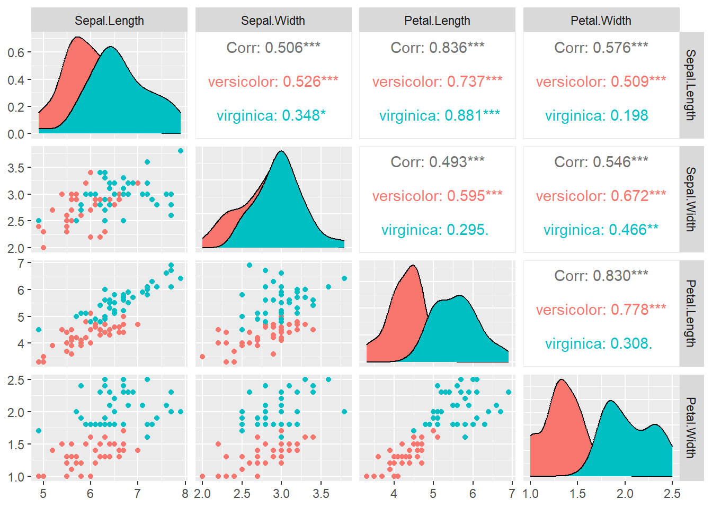
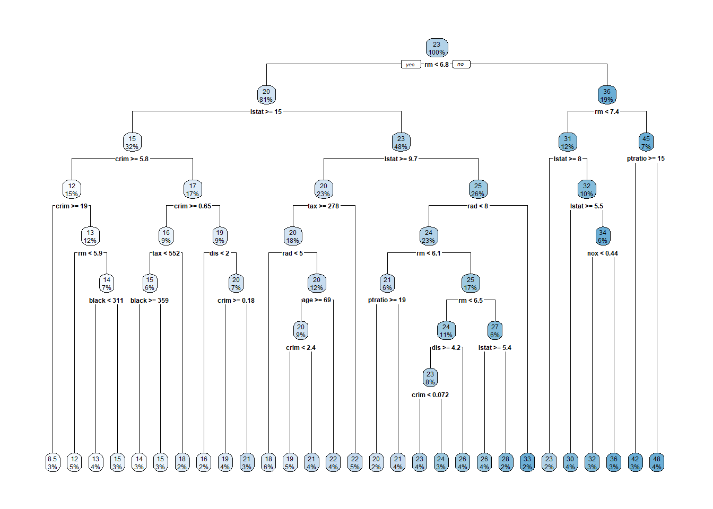

8 Discriminant Analysis and Classification
Learning Outcomes
After finishing this chapter, students should be able to
- Use proper performance metrics to compare classification methods.
- Use cross-validation method to fit classification models.
- Explain the main idea of each classification method covered: K-nearest neighbor, logistic regression, classification tree, random forests, neural network, support vector machines, and Fisher’s LDA and QDA.
- Use R to fit the models listed above and interpret the computer outputs.
8.1 Introduction
Discriminant analysis and classification is one of most important applications in multivariate analysis. In a discriminant analysis and classification, each observation consists of a vector of explanatory variables \(\mathbf{x}=\{x_1, x_2, \cdots, x_p\}\) and one categorical response variable \(y\in \{1, 2, \cdots, k\}\) indicating which class this observation belongs to. The main objectives of a classification problem is to build a discriminant function to separate the observations into \(k\) categories and classify new observations to one of the \(k\) classes.
Here are two examples:
- Classify the Iris flowers. There are three species, each flower has four measurements: sepal length and sepal width, petal length and petal width.
- Classify emails and spams. The data set has 4601 messages and each message has 57 explanatory variables: frequencies of 48 words such as remove, you edu; frequencies of 6 characters such as $, ! and other 3 variable telling the average length of capital letters and total number of capital letters in the email. The question of interest is whether we could build a model to predict a message’s probability of being a spam, i.e., a spam filter.
The main idea of building the discriminant function is to model \(P(Y=j|\mathbf{x}), j=1, 2, \cdots, k\) and assign the observation to the class yielding the largest probability.
8.2 Performance Measure
There are many classification methods, when it comes to compare the performance of different methods, we use the misclassification rate which is defined as the proportion of objects that are classified to a wrong group. The misclassification table for a binary case can be presented as a 2\(\times\) 2 table:
\[\begin{array}{|c|c|c|} \hline \text{True}&\text{Classification result} & \text{Classification result}\\ \text{label}&1&0\\ \hline 1&TP \text{(true positive)} & FN \text{(false negative)}\\ \hline 0&FP \text{(false positive)}&TN \text{(true negative)}\\ \hline \end{array}\]And the misclassification rate is defined as \[ \mbox{Misclassification Rate}=\frac{\mbox{FN}+\mbox{FP}}{\mbox{TP}+\mbox{FN}+\mbox{FP}+\mbox{TN}}. %=1-\frac{\mbox{sum of diagonal elements}}{n}, \] The smaller the misclassification rate the better the classifier. The definition of the misclassification rate can be generalized to more than two classes. \[ \mbox{Misclassification Rate}=1-\mbox{accuracy}=1-\frac{\mbox{sum of diagonal elements}}{n}, \] where \(n=\mbox{FN}+\mbox{FP}+\mbox{TP}+\mbox{TN}\) is the sample size. Misclassification rate, however, is not appropriate performance measure when the classes are extremely unbalanced. Take the following confusion table for example,
\[\begin{array}{|c|c|c|c|} \hline \text{True}&\text{Classification Result}&\text{Classification Result}\\ \text{label}&1&0&\text{Total}\\ \hline 1&30&20&50\\ \hline 0&40&1960&2000\\ \hline \text{Total}&70&1980&2050\\ \hline \end{array}\]the misclassification rate for this classifier is \[ \mbox{MR}=\frac{\mbox{FN}+\mbox{FP}}{\mbox{TP}+\mbox{FN}+\mbox{FP}+\mbox{TN}}=\frac{40+20}{2050}=\frac{60}{2050} \] which is even larger than the misclassification rate \(\frac{50}{2050}\) if we simply classify all observations as class-0. The classifier, however, is useful in that it correctly classifies 30 out of 50 class-1 observations. Note that number of class-0 observations (\(n_0\)) is much larger than the number of class-1 observations (\(n_1\)) in this example; therefore, misclassification rate is not proper for this example.
Another popular performance metric for classification problem is the receiver operating characteristic (ROC) curve or more precisely, the area under the ROC curve (AUC). The ROC curve plots the true positive versus false positive. The following figure illustrates several typical ROC curves.
- Left panel: the model has no discriminant power, it cannot separate the two classes. The area under the ROC curve is close to 0.5. The model has the same effect as random ranking.
- Middle panel: the model has a good discriminant power, it separates the two classes quite well. The area under the ROC curve is 0.8726.
- Right panel: the model has a perfect discriminant power, it separates the two classes perfectly. The area under the ROC curve is close to 1.
The area under the ROC curve equals the probability of correctly ranking a random class-1 and class-0 pair. The larger the area the better. If a classifier assigns score to the subjects randomly or by guessing, the AUC is 0.5, any classifier with an AUC below 0.5 is useless. The perfect classifier has AUC 1.
8.3 Overfitting and Cross Validation
There are some tuning parameters in a discriminant function needed to estimate using the data. We need to watch out for overfitting when fitting the models. It is easier to explain the idea of overfitting using regression models for a continuous variable. For example in Figure ??, I want to model the relationship between \(x\) and \(y\) based on the black dots. Which model is the best and how well does the model in predicting new observations? The first model is just a simple linear regression (a straight line), the second one is a quadratic regression with the \(x^2\) term; the last one goes through all data points. The last model fits the black dots the best since all the data points are on the lines, however, it might not good for predicting new observations. As for a prediction, the quadratic regression does a better job, therefore, we say the first model underfits the data and the last one overfits the data.
Figure 8.1: Overfitting/Underfitting Problem
Figure 8.2: Overfitting/Underfitting Problem
Figure 8.3: Overfitting/Underfitting Problem
In order to avoid overfitting, we use the idea of cross-validation when we choose the optimal values of the parameters in the model. The key idea is to train or build the model using part of the data and evaluate using the hidden data. Choose the value of the parameter which gives the smallest cross-validation error rate. We will see one example later. If each time you remove only one observation, this is called leave-one-out cross-validation. If the data set is huge, leave-one-out is too time-consuming, you can use \(k\)-fold cross-validation, and divide the data into \(k\) folds with the same number of observations, the same distribution of the classes. Fit the model using the \(k-1\) folds of the data and use the remaining fold for evaluation. Pick the one that gives the smallest error rate.
8.4 Classification Models
The classification models covered in this note are \(K\) nearest neighbors (KNN), logistic regression, recursive partitioning (classification tree), random forests, neural network (NNet), and support vector machine (SVM).
8.4.1 \(K\) Nearest Neighbors
Assign the unlabeled point to the majority class among its \(k\)-nearest neighbors. Euclidean distance is one measure to find the nearest neighbors.
Figure 8.4 shows the basic idea of the KNN method. Suppose there are two classes: red triangle and blue square, want to assign the black circle to one of the two classes. When \(k=5\), among the five nearest neighbors, four of them are red triangles; therefore, \(P_{\mbox{red}}=\frac{4}{5}\) and \(P_{\mbox{black}}=\frac{1}{5}\). As a result, we should classify the black circle as a red triangle.
Figure 8.4: Basic Idea of KNN
- Two classes: red triangle and blue square.
- Need to assign the black circle to one of the two classes.
- When \(k=5\), \(P_{\mathbf{red}}=\frac{4}{5}\).
- When \(k=8\), \(P_{\mathbf{red}}=\frac{7}{8}\).
- A cluster of blue square on upper-left corner.
Cross validation can be used to choose the optimal value of \(k\): the number of nearest of neighbors. The algorithm (with leave-one-out cross validation) is as follows:
- Split the data into training and testing sets using stratified sampling.
- Loop over a grid of values of \(k\), the number of neighbors. For example, \(k=1, 3, 5, 7, 9, \cdots, n\) (only consider odd values to avoid ties){
- Loop over \(i=1, 2, \cdots, n\) (all observations){
- Predict \(y_i\) with \(x_i\) omitted using KNN}
- Given the value of \(k\), find the \(k\) nearest neighbors for each observation in the training set, and assign it to the majority class of its neighbors.
- Calculate the misclassification rate for the current value of \(k\) }
- Plot error rate (or accuracy) versus \(k\), choose the value of \(k\) that gives the smallest error rate.
Take the Iris data for example, there are three species, 50 flowers for each species. Divide the data into training (80% i.e., 120 flowers, 40 from each species) and test sets (20%, 10 from each species) using stratified sampling. Fit the model on the training set, the plot shows that when \(k=6, 9, 11\) or \(k=16\) the KNN model gives the smallest error (or largest accuracy). R outputs \(k=16\) as the optimal value of \(k\). In practice, we can try all the four optimal \(k\) values and pick the one gives the largest accuracy. Apply the KNN method on the test data with \(k=16\), we obtain the confusion table and the resulting accuracy is \(\frac{10+9+10}{30}=0.97\).
library(caret) # Load the caret package
data(iris) # Load the iris data set
y <- iris$Species # Set the response variable
x <- iris[,-5] # Set the predictor variables
# Split the data into training and testing sets
set.seed(6194)
splitIndex <- createDataPartition(y, p = .8, list = FALSE)
training <- x[splitIndex,] # training set
testing <- x[-splitIndex,] # test set
training_labels <- y[splitIndex] # response variable in the training set
testing_labels <- y[-splitIndex] # response variable in the test set
table(training_labels) #stratified sampling for training and testing sets## training_labels
## setosa versicolor virginica
## 40 40 40# Train the model using a grid search for best k
ctrl <- trainControl(method="cv", number=10) # 10-fold cross-validation
grid <- expand.grid(k = 1:20) #grid of k
model <- train(training, training_labels, method = "knn", tuneGrid = grid, trControl = ctrl)
plot(model)## [1] 16#accuracy on the testing set
knnfit <- knn3Train(training,testing, training_labels, k=model$bestTune$k)
(cm <- table(Predict=knnfit, True=testing_labels)) # confusion matrix## True
## Predict setosa versicolor virginica
## setosa 10 0 0
## versicolor 0 9 0
## virginica 0 1 10## [1] 0.96666678.5 Logistic Regression for Binary Response
In multiple regression, We model the conditional mean of \(Y\) given \(x_1, x_2, \cdots, x_k\), \(\mu_{Y|x_1, x_2, \cdots, x_k}\), and its predictors \(x_1, x_2, \cdots, x_k\) using a hyperplane, that is \[ \mu_{Y|x_1, x_2, \cdots, x_k}=\beta_0+\beta_1x_1+\beta_2x_2+\cdots+\beta_kx_k \] The meaning of \(\beta_0, \beta_1, \cdots, \beta_k\):
- \(\beta_0\): the \(\textbf{mean response}\) when \(x_1=0, x_2=0, \cdots, x_k=0\).
- \(\beta_i\): the change in the \(\textbf{mean response}\) when \(x_i\) \(\textbf{increases by 1 unit}\) while keeping other predictor variables the same.
Similar to the multiple regression, we would like to model \(P(Y=j|\mathbf{x})\) using the explanatory variables \(\mathbf{x}=\{x_1, \cdots, x_p\}\). However, the domain of \(P(Y=j|\mathbf{x})\) is \([0, 1]\) which is bounded. The logistic regression models the log odd ratio and the explanatory variables using a regression model. We start with the binary case to introduce the idea. The logistic regression model for a binary response variable is given by \[ \ln \frac{P(Y=\text{setosa})}{P(Y=0)}=\ln \frac{P(Y=1)}{1-P(Y=1)}=\beta_0+\beta_1x_1+\cdots+\beta_px_p \Longrightarrow P(Y=1)=\frac{e^{\beta_0+\beta_1x_1+\cdots+\beta_px_p}}{1+e^{\beta_0+\beta_1x_1+\cdots+\beta_px_p}}, \] the observation is classified as \(y=1\) if \(P(Y=1)\ge 0.5\).
Interpretation of \(\beta_i\)
The term \(\frac{P(Y=1)}{P(Y=0)}\) is called the odds which is the expected number of successes per failure. Logistic regression models the log odds using linear regression terms \(\beta_0+\beta_1x_1+\cdots+\beta_px_p\). Consider a continuous variable \(x_j\), if its value increases by 1 unit from \(a\) to \(a+1\) while keeping all the other variables the same, we have \[ \ln \frac{P(Y=1|x_j=a+1)}{P(Y=0|x_j=a+1)} -\ln \frac{P(Y=1|x_j=a)}{P(Y=0|x_j=a)}=\beta_j\Longrightarrow \mbox{odds ratio}=e^{\beta_j}. \]
The sign of \(\beta_j\) indicates whether the odds ratio increases or decreases. If \(\beta_j>0\), the odds ratio increases as \(x_j\) increases; if \(\beta_j<0\), the odds ratio decreases as \(x_j\) increases.
The magnitude of the coefficient \(|\beta_j|\) represents the size of the effect of the predictor variable on the odds ratio. Larger magnitudes indicate a stronger influence.
Interpretation of \(\beta_j\):
If \(\beta_j>0\), one unit increase in \(x_j\) increases the odds ratio by \((e^{\beta_j}-1)\times 100\%\) as all other variables remain the same.
If \(\beta_j<0\), one unit increase in \(x_j\) reduces the odds ratio by \((1-e^{\beta_j})\times 100\%\) as all other variables remain the same.
Estimation of \(\beta_i\)
The estimation of the regression coefficients \(\beta_0, \beta_1, \cdots, \beta_p\) is based on the likelihood methods and maximum likelihood estimates are obtained using the Newton-Raphson method. Let \(p_i=P(Y_i=1)\), then \(Y_i\sim \mbox{Bernoulli}(p_i)\) and the likelihood function for \(\beta\)s is \[ L(\beta_0, \beta_1, \cdots, \beta_p; y_1, y_2, \cdots, y_n)=\prod_{i=1}^n p_i^{y_i}(1-y_i)^{1-y_i} \] and the log-likelihood is \[ l(\beta_0, \beta_1, \cdots, \beta_p)=\sum_{i=1}^n y_i\ln(p_i)+\sum_{i=1}^n (1-y_i)\ln(1-p_i) \mbox{ with } p_i=\frac{e^{\beta_0+\beta_1x_1+\cdots+\beta_px_p}}{1+e^{\beta_0+\beta_1x_1+\cdots+\beta_px_p}}. \] To obtain the maximum likelihood estimate of \(\beta_j\) we need to take the partial derivative of \(l(\beta_0, \beta_1, \cdots, \beta_p)\) with respect to \(\beta_j\), and find the solutions for the score equations: \[ \frac{\partial l}{\partial \beta_0}=0, \quad \frac{\partial l}{\partial \beta_1}=0, \quad \cdots, \quad \frac{\partial l}{\partial \beta_p}=0. \] In general, there is no closed form solutions and Newton-Raphson method will be used to obtain the estimates of \(\beta\)s.
Apply logistic regression on the Iris data with the last two species and the computer outputs are as follows.
iris2 <- iris[iris$Species %in% c("virginica", "versicolor"), ] #use the last two species
iris2$Species <- droplevels(iris2$Species) #drop the level with no observations
set.seed(6194) # Split the data into training and testing sets
splitIndex <- createDataPartition(iris2$Species, p = .8, list = FALSE)
training <- iris2[splitIndex,] # training set
testing <- iris2[-splitIndex,] # test set
table(training$Species) #stratified sampling##
## versicolor virginica
## 40 40## Warning: glm.fit: algorithm did not converge## Warning: glm.fit: fitted probabilities numerically 0 or 1 occurredThere are two warning messages
- glm.fit: algorithm did not converge
- glm.fit: fitted probabilities numerically 0 or 1 occurred
The “did not converge” issue can be resolved by increasing the number of maximum iterations.
The second warning is generated when the generalized linear model (GLM) that you are fitting to your data has predicted probabilities that are equal to 0 or 1, which can cause problems in the optimization process. This issue can arise when you have a highly imbalanced response variable, or when there are predictor variables with high levels of multicollinearity, or when there are variable separating the two classes perfectly.
From the scatter plot matrix, the variables \(\texttt{Petal Length}\) and \(\texttt{Petal Width}\) can separate the two species very well. \(\texttt{Sepal Length}\) and \(\texttt{Petal Length}\) are highly correlated, so are \(\texttt{Petal Length}\) and \(\texttt{Petal Width}\).

Remove the variable \(\texttt{Petal Length}\) and refit the logistic model, we have.
##
## Call:
## glm(formula = Species ~ ., family = "binomial", data = training[,
## -3])
##
## Deviance Residuals:
## Min 1Q Median 3Q Max
## -1.50433 -0.00325 0.00000 0.00257 1.78049
##
## Coefficients:
## Estimate Std. Error z value Pr(>|z|)
## (Intercept) -51.572 27.804 -1.855 0.0636 .
## Sepal.Length 2.901 2.200 1.318 0.1874
## Sepal.Width -9.146 6.411 -1.427 0.1537
## Petal.Width 35.481 19.049 1.863 0.0625 .
## ---
## Signif. codes: 0 '***' 0.001 '**' 0.01 '*' 0.05 '.' 0.1 ' ' 1
##
## (Dispersion parameter for binomial family taken to be 1)
##
## Null deviance: 110.904 on 79 degrees of freedom
## Residual deviance: 10.387 on 76 degrees of freedom
## AIC: 18.387
##
## Number of Fisher Scoring iterations: 10logitpred <- predict(logitfit,newdata=testing[,-3], type="response")
(ltab <- table(Predit=ifelse(logitpred<0.5,"versicolor","virginica"),True=testing$Species))## True
## Predit versicolor virginica
## versicolor 10 3
## virginica 0 7## [1] 0.85\(\textbf{Example}\): Binary Logistic Regression for Admission Data
## admit gre gpa prestige
## 1 0 380 3.61 3
## 2 1 660 3.67 3
## 3 1 800 4.00 1
## 4 1 640 3.19 4
## 5 0 520 2.93 4
## 6 1 760 3.00 2## 'data.frame': 400 obs. of 4 variables:
## $ admit : int 0 1 1 1 0 1 1 0 1 0 ...
## $ gre : int 380 660 800 640 520 760 560 400 540 700 ...
## $ gpa : num 3.61 3.67 4 3.19 2.93 3 2.98 3.08 3.39 3.92 ...
## $ prestige: int 3 3 1 4 4 2 1 2 3 2 ...data <- data0
data$admit <- as.factor(data$admit) #convert admit to a factor
#fit a logistic regression, treat "prestige" as numerical
mlogit <- glm(admit~.,data=data,family = "binomial")
summary(mlogit)##
## Call:
## glm(formula = admit ~ ., family = "binomial", data = data)
##
## Deviance Residuals:
## Min 1Q Median 3Q Max
## -1.5694 -0.8871 -0.6374 1.1626 2.1672
##
## Coefficients:
## Estimate Std. Error z value Pr(>|z|)
## (Intercept) -3.340670 1.137622 -2.937 0.00332 **
## gre 0.002247 0.001092 2.059 0.03953 *
## gpa 0.752857 0.328375 2.293 0.02187 *
## prestige -0.559515 0.127056 -4.404 1.06e-05 ***
## ---
## Signif. codes: 0 '***' 0.001 '**' 0.01 '*' 0.05 '.' 0.1 ' ' 1
##
## (Dispersion parameter for binomial family taken to be 1)
##
## Null deviance: 496.15 on 396 degrees of freedom
## Residual deviance: 456.56 on 393 degrees of freedom
## (3 observations deleted due to missingness)
## AIC: 464.56
##
## Number of Fisher Scoring iterations: 4The fitted logistic regression is \[\begin{align*} \ln \frac{P(admitted)}{P(not)}&=\beta_0+\beta_1\times gre+\beta_2 \times gpa+\beta_3\times prestige\\ &=-3.34067+0.002247\times gre+0.752857 \times gpa-0.559515\times prestige\\ &\Longrightarrow \frac{P(admitted)}{P(not)}=e^{-3.34067+0.002247\times gre+0.752857 \times gpa-0.559515\tim es prestige}. \end{align*}\]
All the three predictor variables are statistical significant at the 5% significance level. Interpretation of the coefficients of the fitted logistic regression: the odds ratio \[ \frac{\frac{P(admitted|gre=a+1)}{P(not)}}{\frac{P(admitted|gre=a)}{P(not)}} \] equals to \(e^{0.002247}=1.00225\) when the gre score increases by 1 given gpa and prestige remaining the same. This means that the odds of being admitted increase by a factor of 1.00225 or increase by \((1.00225-1)\times 100\%=0.225\%\) when the gre score increases by 1 given gpa and prestige remaining the same. Similarly, the odds of being admitted increase by a factor of \(e^{0.752857}=2.123057\) or increase by 112.3% when the gpa increases by 1 given gre score and prestige remaining the same; the odds of being admitted decreases by a factor of \(e^{0.559515}=1.749824\) when the prestige increases by 1 (downgrade from the first rank to the second rank) given gre score and gpa remaining the same. The overall misclassificaiton rate is 0.2922.
Let’s predict the chance of being admitted for the first student who has a gre score 380, gpa 3.61 and graduated for 3rd class undergraduate institution.
Since \[ \frac{P(admitted)}{1-P(admitted)}=e^{-3.34067+0.002247\times gre+0.752857 \times gpa-0.559515\times prestige} \Longrightarrow \] \[P(admitted)=\frac{e^{-3.34067+0.002247\times gre+0.752857 \times gpa-0.559515\times prestige}}{1+e^{-3.34067+0.002247\times gre+0.752857 \times gpa-0.559515\times prestige}}\] \[=\frac{e^{-3.34067+0.002247\times 380+0.752857 \times 3.61-0.559515\times 3}}{1+e^{-3.34067+0.002247\times 380+0.752857 \times 3.61-0.559515\times 3}}=0.1904.\]
Since \(P(admitted)=0.1904<0.5\), we predict this student as “not admitted” which is a correct decision since the first student was not admitted according to the data.
We can also confirm the probability of admission for the first student as follows.
bvec <- mlogit$coefficients #the coefficients from the logistic regression
xvec <- c(1,as.numeric(data[1,-1]))
a <- sum(xvec*bvec)
(p <- exp(a)/(1+exp(a))) #the same as pred1## [1] 0.1903973pvec <- predict(mlogit,data,type <- "response") #predicted prob for all
tresult <- ifelse(pvec<0.5,0,1) #convert prob to 1 (at least 0.5) or 0 (<0.5)
(ltab <- table(True=data[,1],Predict=tresult)) #confusion table## Predict
## True 0 1
## 0 253 18
## 1 98 28## [1] 0.2921914Note that 0.5 is not always the proper cut-off. If the data is imbalanced, i.e., one class dominates, the relative frequency of class-1 observations is a better choice for the cut-off.
8.6 Logistic Regression for Multi-class Nominal Data
Suppose the categorical response variable has \(c\) levels, and arbitrarily let category 1 be the reference level. Logistic regression can be generalized to multi-class as follows.
- Fit \(c-1\) binary logistic regression \[ \ln \frac{P(Y=j)}{P(Y=1)}=\beta_0^{(j)}+\beta_1^{(j)}x_1+\cdots+\beta_p^{(j)}x_p=\mathbf{x}\mathbf{\beta}^{(j)} \Longrightarrow P(Y=j)=P(Y=1) e^{\mathbf{x} \mathbf{\beta}^{(j)}}, j=2, 3, \cdots, c. \] That is \[ \begin{aligned} P(Y=1)&=P(Y=1)\\ P(Y=2)&=P(Y=1)\times e^{\mathbf{x} \mathbf{\beta}^{(2)}}\\ P(Y=3)&=P(Y=1)\times e^{\mathbf{x} \mathbf{\beta}^{(3)}}\\ \vdots&=\vdots\\ P(Y=c)&=P(Y=1)\times e^{\mathbf{x} \mathbf{\beta}^{(c)}}\\ \end{aligned} \] Given the fact that \(\sum_{j=1}^c P(Y=j)=1\), we have \[ P(Y=1)(1+e^{\mathbf{x} \mathbf{\beta}^{(2)}}+e^{\mathbf{x} \mathbf{\beta}^{(3)}}+\cdots+e^{\mathbf{x} \mathbf{\beta}^{(c)}})=1\Longrightarrow P(Y=1)=\frac{1}{1+e^{\mathbf{x} \mathbf{\beta}^{(2)}+}e^{\mathbf{x} \mathbf{\beta}^{(3)}}+\cdots+e^{\mathbf{x} \mathbf{\beta}^{(c)}}}. \] Therefore, we can solve for \[ P(Y=j)=\frac{e^{\mathbf{x} \mathbf{\beta}^{(j)}}}{1+e^{\mathbf{x} \mathbf{\beta}^{(2)}+}e^{\mathbf{x} \mathbf{\beta}^{(3)}}+\cdots+e^{\mathbf{x} \mathbf{\beta}^{(c)}}}, j=2, \cdots, c. \]
- Classify the observation to the class with the largest probability.
library(nnet)
set.seed(6194)
splitIndex <- createDataPartition(iris$Species, p = .8, list = FALSE)
training <- iris[ splitIndex,] # training set
testing <- iris[-splitIndex,] # test set
table(training$Species)##
## setosa versicolor virginica
## 40 40 40## Call:
## multinom(formula = Species ~ ., data = training, trace = F)
##
## Coefficients:
## (Intercept) Sepal.Length Sepal.Width Petal.Length Petal.Width
## versicolor 25.18619 -2.19761 -15.64359 12.00310 -1.846649
## virginica -47.58622 -55.41464 -58.71412 98.52301 57.943819
##
## Std. Errors:
## (Intercept) Sepal.Length Sepal.Width Petal.Length Petal.Width
## versicolor 625.4250 234.2197 320.0780 30.32423 207.0105
## virginica 247.3652 171.1546 368.0706 223.88557 180.1804
##
## Residual Deviance: 1.154569
## AIC: 21.15457## Sepal.Length Sepal.Width Petal.Length Petal.Width Species
## 1 5.1 3.5 1.4 0.2 setosaBased on the coefficients of \(\texttt{mlogit}\), we have \[\ln \frac{P(Y=\text{versicolor})}{P(Y=\text{setosa})}=25.18619-2.19761x_1-15.64359x_2+12.00310x_3-1.846649x_4 \quad \Longrightarrow\] \[P(Y=\text{versicolor})=P(Y=\text{setosa})e^{25.18619-2.19761x_1-15.64359x_2+12.00310x_3-1.846649x_4}=P(Y=\text{setosa})e^{a_{21}},\] where \(x_1=\text{Sepal Length}, x_2=\text{Sepal Width}, x_1=\text{Petal Length}, x_2=\text{Petal Width}\).
Similarly, \[\ln \frac{P(Y=\text{virginica})}{P(Y=\text{setosa})}=-47.58622-55.41464x_1-58.71412x_2+98.52301x_3+57.943819x_4 \quad \Longrightarrow\] \[P(Y=\text{virginica})=P(Y=\text{setosa})e^{-47.58622-55.41464x_1-58.71412x_2+98.52301x_3+57.943819x_4}=P(Y=\text{setosa})e^{a_{31}}.\]
Given the fact that \(P(Y=\text{setosa})+P(Y=\text{versicolor})+P(Y=\text{virginica})=1\), we have \[P(Y=\text{setosa})+P(Y=\text{versicolor})+P(Y=\text{virginica})=P(Y=\text{setosa})+P(Y=\text{setosa})e^{a_{21}}+P(Y=\text{setosa})e^{a_{31}}=1 \Longrightarrow\] \[P(Y=\text{setosa})=\frac{1}{1+e^{a_{21}}+e^{a_{31}}}, \quad P(Y=\text{versicolor})=\frac{e^{a_{21}}}{1+e^{a_{21}}+e^{a_{31}}}, \quad P(Y=\text{virginica})=\frac{e^{a_{31}}}{1+e^{a_{21}}+e^{a_{31}}}.\] Assign the observation to the class giving the largest probability. For example, the first flower in the training set has \(x_1=5.1, x_2=3.5, x_3=1.4, x_4=0.2\), \[ \begin{aligned} a_{21}&=25.18619-2.19761x_1-15.64359x_2+12.00310x_3-1.846649x_4 \\ &=25.18619-2.19761(5.1)-15.64359(3.5)+12.00310(1.4)-1.846649(0.2) =-24.33918. \end{aligned} \] Similarly, \[ \begin{aligned} a_{31}&=-47.58622-55.41464x_1-58.71412x_2+98.52301x_3+57.943819x_4\\ &=-47.58622-55.41464(5.1)-58.71412(3.5)+98.52301(1.4)+57.943819(0.2)=-386.1793. \end{aligned} \]
Therefore, \[ P(Y=\text{setosa})=\frac{1}{1+e^{a_{21}}+e^{a_{31}}}=\frac{1}{1+e^{-24.33918}+e^{-386.1793}}=1; \] and \[ P(Y=\text{versicolor})=\frac{e^{a_{21}}}{1+e^{a_{21}}+e^{a_{31}}}=\frac{e^{-24.33918}}{1+e^{-24.33918}+e^{-386.1793}}=2.689191\times 10^{-11}; \] and \[ P(Y=\text{virginica})=\frac{e^{a_{31}}}{1+e^{a_{21}}+e^{a_{31}}}=\frac{e^{-386.1793}}{1+e^{-24.33918}+e^{-386.1793}}=1.925122\times 10^{-168}. \] Since \(P(Y=\text{setosa})>P(Y=\text{versicolor})>P(Y=\text{virginica})\), we classify the first flower as setosa, which turns out to be a correct decision.
The accuracy of multi-class logistic regression on the testing set is 0.93333 which is slightly worst than that of KNN.
## True
## Predict setosa versicolor virginica
## setosa 10 0 0
## versicolor 0 9 1
## virginica 0 1 9## [1] 0.93333338.7 Cumulative Logit Model for Multi-class Ordinal Data
When the response variable is ordinal with \(c\) levels, we have \[ P(Y\le j)=P(Y=1)+P(Y=2)+\cdots+P(Y=j)=p_1+p_2+\cdots+p_j, j=1, 2, \cdots, c. \] The cumulative probabilities reflect the ordering: \[ P(Y\le 1)\le P(Y\le 2)\le \cdots \le P(Y\le c)=1. \] The cumulative logits are given by \[ \text{logit}[P(Y\le j)]=\ln\frac{P(Y\le j)}{1-P(Y\le j)}=\ln \frac{p_1+p_2+\cdots+p_j}{p_{j+1}+\cdots+p_c}, j=1, 2, \cdots, c-1. \] Take \(c=3\) for example, the two cumulative logits are \[ \text{logit}[P(Y \le 1)]=\ln \frac{p_1}{p_2+p_3}; \quad \text{logit}[P(Y\le 2)]=\ln \frac{p_1+p_2}{p_3}. \] For cumulative logit model, we don’t need to model \(P(Y\le c)\) since \(P(Y\le c)=1\).
8.7.1 Cumulative Logit Models with Proportional Odds
A cumulative logit model for level \(j\) can be treated as a binary logistic regression model in which categories 1 to \(j\) combine to form one category and categories \(j+1\) to \(c\) form the other. The cumulative logit model with only one explanatory variable \(x\) is given by \[ \text{logit}[P(Y \le j)]=\alpha_j+\beta x, j=1, 2, \cdots, c-1. \] The parameter \(\beta\) quantifies the effect of \(x\) on the log odds of resulting in category \(j\) or below; and the effect is the same for all \(j=1, 2, \cdots, c-1\).
The interpretation of the coefficients of the fitted proportional odds regression model is as follows:
Interpretation of \(\alpha_j\). For a fixed value of \(x\), \[ \text{logit} P(Y\le j|x=a)]-\text{logit} P(Y \le i|x=a)=(\alpha_j+\beta a)-(\alpha_i+\beta a)=\alpha_j-\alpha_i, j>i \] which implies \[ \frac{P(Y\le j)/P(Y>j)}{P(Y\le i)/P(Y>i)}=e^{a_j-a_i}. \] That is the odds of resulting in category \(j\) or below is \(e^{\alpha_j-\alpha_i}\) times of the odds of resulting in category \(i\) or below given that \(x\) is the same.
Interpretation of \(\beta\). With one unit increase in \(x\), \[ \text{logit} P(Y\le j|x=a+1)-\text{logit} P(Y\le j|x=a)=[\alpha_j+\beta (a+1)]-[\alpha_j+\beta a]=\beta \] which implies \[ \frac{P(Y\le j|x=a+1)/P(Y>j|x=a+1)}{P(Y\le j|x=a)/P(Y>j|x=a)}=e^{\beta}. \] This means the odds of resulting in category \(j\) or below increases by \((e^{\beta}-1)\times 100\%\) when \(x\) increases by 1 unit. The change is the same for each category \(j\); this property is called proportional odds.
If \(\beta>0\) then the probability to fall into a lower category increases with increasing \(x\). This is against the usual interpretation, positive slope is associated with a positive correlation. For this reason, some statistical software models \(\text{logit}(P(Y\le j))=\alpha_j-\beta x\) and reports the negative of the slope. Make sure that you read the documentation of the built-in functions. For example in R, \(\texttt{polr}\) function in package \(\texttt{MASS}\) reports the negative of the slope. However, the \(\texttt{vglm}\) function in package \(\texttt{VGAM}\) reports the positive of the slope.
In general, logistic regression for ordinal response is given by \[ \text{logit}[P(Y \le j)]=\alpha_j+\beta_1 x_1+\beta_2x_2+\cdots+\beta_kx_k, j=1, 2, \cdots, c-1, \] the intercept \(\alpha\) varies but the slopes \(\beta_i\)s are the same for all categories \(j=1, 2, \cdots c-1\). This model has \((c-1)+k\) parameters, much smaller than the number of parameters of the baseline logistic regression for nominal response which uses different intercept and slopes \(\beta_i\)s for each categories \(j=2, \cdots c\) given that \(c=1\) is the reference level. The number of parameters in a baseline logistic regression model is \((c-1)(k+1)\).
8.7.2 Model Probability of Each Category
Given that \[ \text{logit}[P(Y \le j)]=\alpha_j+\beta_1 x_1+\beta_2x_2+\cdots+\beta_kx_k, j=1, 2, \cdots, c-1, \] we have \[ P(Y \le j)=\frac{e^{\alpha_j+\beta_1 x_1+\beta_2x_2+\cdots+\beta_kx_k}}{1+e^{\alpha_j+\beta_1 x_1+\beta_2x_2+\cdots+\beta_kx_k}}, j=1, 2, \cdots, c-1. \] Therefore, the probability of each category can be calculated as \[ P(Y=j)=P(Y\le j)-P(Y\le j-1), j=2, 3, \cdots, c. \] Note that \(P(Y=1)=P(Y\le 1)\). We assign the observation to the category with the largest probability, i.e., \[ \hat y=\text{argmax}_j P(Y=j). \]
\(\textbf{Example}\): Proportional Odds Model for Ordinal Response
Consider the heart disease data with variables
- age : Age of the patient
- sex : Sex of the patient (1 = male; 0 = female)
- cp : Chest Pain type
- Value 0: asymptomatic
- Value 1: non-anginal pain
- Value 2: atypical angina
- Value 3: typical angina
- trtbps : resting blood pressure (in mm Hg)
- chol : cholesterol in mg/dl fetched via BMI sensor
- fbs : (fasting blood sugar > 120 mg/dl) (1 = true; 0 = false)
- restecg : resting electrocardiographic results
- Value 0: normal
- Value 1: having ST-T wave abnormality (T wave inversions and/or ST elevation or depression of > 0.05 mV)
- Value 2: showing probable or definite left ventricular hypertrophy by Estes’ criteria
- thalach : maximum heart rate achieved
- exang: exercise induced angina (1 = yes; 0 = no)
- oldpeak: ST depression induced by exercise relative to rest. ST relates to positions on the ECG plot.
- slp: the slope of the peak exercise ST segment
- Value 1: upsloping
- Value 2: flat
- Value 3: downsloping
- ca: number of major vessels (0-3)
- thal: A blood disorder called thalassemia
- Value 3: normal blood flow
- Value 6: fixed defect (no blood flow in some part of the heart)
- Value 7: reversible defect (a blood flow is observed but it is not normal)
- output : heart disease (0-4, 0=no presence)
Fit a proportional odds model on the response variable \(\texttt{output}\) which has five levels (0-4) using \(\texttt{sex}\) and number of major vessels with blockage \(\texttt{ca}\) as the predictor variables.
We can use the \(\texttt{polr}\) function in R package \(\texttt{MASS}\) to fit a proportional odds logistic regression. Note that the \(\texttt{polr}\) function reports negative of the slope.
hdf <- read.csv("data/heart_disease.csv")
hdf$sex <- as.factor(hdf$sex) #convert integer to factor
hdf$exang <- as.factor(hdf$exang)
hdf$cp <- as.factor(hdf$cp)
hdf$restecg <- as.factor(hdf$restecg)
hdf$fbs <- as.factor(hdf$fbs)
hdf$slp <- as.factor(hdf$slp)
hdf$thal <- as.factor(hdf$thal)
#hdf$output <- as.factor(hdf$output)
head(hdf) #show the first 6 observations## age sex cp trtbps chol fbs restecg thalachh exang oldpeak slp ca thal output
## 1 63 1 3 145 233 1 2 150 0 2.3 3 0 6 0
## 2 67 1 0 160 286 0 2 108 1 1.5 2 3 3 2
## 3 67 1 0 120 229 0 2 129 1 2.6 2 2 7 1
## 4 37 1 1 130 250 0 0 187 0 3.5 3 0 3 0
## 5 41 0 2 130 204 0 2 172 0 1.4 1 0 3 0
## 6 56 1 2 120 236 0 0 178 0 0.8 1 0 3 0library(MASS)
pofit <- polr(as.factor(output)~sex+ca,data=hdf,Hess=T) #return the Hessian matrix
summary(pofit)## Call:
## polr(formula = as.factor(output) ~ sex + ca, data = hdf, Hess = T)
##
## Coefficients:
## Value Std. Error t value
## sex1 1.079 0.2782 3.877
## ca 1.151 0.1359 8.466
##
## Intercepts:
## Value Std. Error t value
## 0|1 1.6434 0.2614 6.2858
## 1|2 2.7185 0.2943 9.2386
## 2|3 3.6417 0.3267 11.1475
## 3|4 5.3086 0.4260 12.4608
##
## Residual Deviance: 665.1239
## AIC: 677.1239
## (4 observations deleted due to missingness)The fitted model is \[ \begin{aligned} \text{logit} P(Y\le 0)&=1.6434-1.079 x_1-1.151 x_2\\ \text{logit} P(Y\le 1)&=2.7185-1.079 x_1-1.151 x_2\\ \text{logit} P(Y\le 2)&=3.6417-1.079 x_1-1.151 x_2\\ \text{logit} P(Y\le 3)&=5.3086-1.079 x_1-1.151 x_2\\ \end{aligned} \] with \[ x_1=\left\{ \begin{array}{ll} 1&\mbox{Male},\\ 0&\mbox{Female}. \end{array} \right. \quad x_2=\text{Ca (number of major vessels with blockage)}. \]
The label \(\texttt{0|1}\) shows the fact that the odds corresponding to \(\frac{P(Y\le 0)}{P(Y>0)}\) which is equivalent to \(\frac{P(Y\le 0)}{P(Y\ge 1)}\). Similarly, the label \(\texttt{1|2}\) corresponds to \(\frac{P(Y\le 1)}{P(Y>1)}=\frac{P(Y\le 1)}{P(Y\ge 2)}\). The same rule applies to all remaining labels.
We can also get confidence intervals for the parameter estimates. These can be obtained either by profiling the likelihood function or by using the standard errors and assuming a normal distribution. Note that profiled CIs are not symmetric (although they are usually close to symmetric). If the 95% CI does not cross 0, the parameter estimate is statistically significant.
## OR 2.5 % 97.5 %
## sex1 2.940876 1.725483 5.152109
## ca 3.159960 2.432623 4.147272Interpretation of the coefficients:
\(\hat \beta_1=1.079\): the odds of heart disease (i.e., 1-4 versus 0) for males is 2.94 times of the odds for females while holding \(\texttt{Ca}\) constant.
\(\hat \beta_2=1.151\): For every one unit increase in Ca (number of major vessels with blockage) the odds of heart disease (1-4 versus 0) is multiplied 3.16 times (i.e., increases 216%) while holding constant \(\texttt{sex}\) variable.
Probability of Each Category
We choose several subjects to predict their categories of heart disease status (0-4).
## sex ca output
## 1 1 0 0
## 2 1 3 2
## 5 0 0 0
## 7 0 2 3## 0 1 2 3 4
## 1 0.6375414 0.19996170 0.09094055 0.05721049 0.01434581
## 2 0.0528015 0.08760571 0.15098063 0.39389758 0.31471458
## 5 0.8379993 0.10010868 0.03635438 0.02061294 0.00492470
## 7 0.3412560 0.26159419 0.18974070 0.16031809 0.04709106## [1] 0 3 0 0
## Levels: 0 1 2 3 4For the first subject who is a male (\(x_1=1\)) and has no major vessel with blockage (\(x_2=0\)), his probability of heart disease status is \[ \begin{aligned} P(Y\le 0)&=\frac{e^{1.6434-1.079 x_1-1.151 x_2}}{1+e^{1.6434-1.079 x_1-1.151 x_2}}=\frac{e^{1.6434-1.079\times 1-1.151\times 0}}{1+e^{1.6434-1.079\times 1-1.151\times 0}}=0.6375\\ P(Y\le 1)&=\frac{e^{2.7185-1.079 x_1-1.151 x_2}}{1+e^{2.7185-1.079 x_1-1.151 x_2}}=\frac{e^{2.7185-1.079 \times 1-1.151 \times 0}}{1+e^{2.7185-1.079 \times 1-1.151 \times 0}}=0.8375\\ P(Y\le 2)&=\frac{e^{3.6417-1.079 x_1-1.151 x_2}}{1+e^{3.6417-1.079 x_1-1.151 x_2}}=\frac{e^{3.6417-1.079 \times 1-1.151 \times 0}}{1+e^{3.6417-1.079 \times 1-1.151 \times 0}}=0.9284\\ P(Y\le 3)&=\frac{e^{5.3086-1.079 x_1-1.151 x_2}}{1+e^{5.3086-1.079 x_1-1.151 x_2}}=\frac{e^{5.3086-1.079 \times 1-1.151 \times 0}}{1+e^{5.3086-1.079 \times 1-1.151 \times 0}}=0.9857\\ \end{aligned} \] which gives \[ \begin{aligned} P(Y=0)&=P(Y\le 0)=0.6375\\ P(Y=1)&=P(Y\le 1)-P(Y\le 0)=0.8375-0.6375=0.2\\ P(Y=2)&=P(Y\le 2)-P(Y\le 1)=0.9284-0.8375=0.0909\\ P(Y=3)&=P(Y\le 3)-P(Y\le 2)=0.9857-0.9284=0.0573\\ P(Y=4)&=P(Y\le 4)-P(Y\le 3)=1-0.9857=0.0143\\ \end{aligned} \] Since \(P(Y=0)\) has the largest value, we predict the first subject’s disease status as 0, which is a correct prediction. Similarly, for the 4th subject who is a female (\(x_1=0\)) with 2 major vessels blocked (\(x_2=2\)), her probability of each disease status can be calculated as \[ \begin{aligned} P(Y\le 0)&=\frac{e^{1.6434-1.079 x_1-1.151 x_2}}{1+e^{1.6434-1.079 x_1-1.151 x_2}}=\frac{e^{1.6434-1.079\times 0-1.151\times 2}}{1+e^{1.6434-1.079\times 0-1.151\times 2}}=0.3411\\ P(Y\le 1)&=\frac{e^{2.7185-1.079 x_1-1.151 x_2}}{1+e^{2.7185-1.079 x_1-1.151 x_2}}=\frac{e^{2.7185-1.079 \times 0-1.151 \times 2}}{1+e^{2.7185-1.079 \times 0-1.151 \times 2}}=0.6026\\ P(Y\le 2)&=\frac{e^{3.6417-1.079 x_1-1.151 x_2}}{1+e^{3.6417-1.079 x_1-1.151 x_2}}=\frac{e^{3.6417-1.079 \times 0-1.151 \times 2}}{1+e^{3.6417-1.079 \times 0-1.151 \times 2}}=0.7924\\ P(Y\le 3)&=\frac{e^{5.3086-1.079 x_1-1.151 x_2}}{1+e^{5.3086-1.079 x_1-1.151 x_2}}=\frac{e^{5.3086-1.079 \times 0-1.151 \times 2}}{1+e^{5.3086-1.079 \times 0-1.151 \times 2}}=0.9529\\ \end{aligned} \] which gives \[ \begin{aligned} P(Y=0)&=P(Y\le 0)=0.3411\\ P(Y=1)&=P(Y\le 1)-P(Y\le 0)=0.6026-0.3411=0.2615\\ P(Y=2)&=P(Y\le 2)-P(Y\le 1)=0.7924-0.6026=0.1898\\ P(Y=3)&=P(Y\le 3)-P(Y\le 2)=0.9529-0.7924=0.1605\\ P(Y=4)&=P(Y\le 4)-P(Y\le 3)=1-0.9529=0.0471\\ \end{aligned} \] Since \(P(Y=0)\) has the largest value, we predict the 4th subject’s disease status as 0 which turns out to be an error, the true disease status is 3. This might be due to the fact that only \(\texttt{sex}\) and \(\texttt{ca}\) are used to fit the model.
8.8 Model Selection for Logistic Regression
Similar multiple linear regression, we can use forward selection and backward elimination methods to choose the “best” subset of predictor variables to include in the logistic regression model. The Akaike information criterion (AIC) and the Bayesian Information Criterion (BIC) can be used to determine the “best” GLM.
Consider two nested models, one of which is more complicate than the other. The more complicate model has more terms and might fit the data closely, i.e., it has smaller bias but larger variance. On the other hand, the simpler model has larger bias but smaller variance. Therefore, it is not necessarily better to select the more complicate model. The best is in the sense that we only include those important variables. Ideally we would like to have a logistic regression model that is simple but still able to capture most of the variation in the response variable. Because a simple model with fewer predictor variable is easy to interpret and maintains reasonable accuracy when applied to new data.
8.8.1 AIC and BIC
The Akaike information criterion (AIC) and the Bayesian Information Criterion (BIC) balance the trade-off between bias and variance and account for both the likelihood and model complexity. The AIC is defined as \[ \mbox{AIC}=-2(\mbox{log likelihood})+2(\mbox{number of parameters in model})=-2l+2p. \] where \(l\) is the log likelihood and \(p\) is the number of parameters in the model. And the BIC is calculated as \[ \mbox{BIC}=-2(\mbox{log likelihood}) + \ln(\mbox{sample size})\times(\mbox{number of parameters in model})=-2l+p\ln (n). \] In general, \(\ln(n)\ge 2\); therefore, BIC penalizes more the model complexity. The model with a smaller AIC or BIC is regarded as a better model.
Example: AIC and BIC
Compare the AIC and BIC of the following two nested models using R: \[ \begin{aligned} \mbox{Model 1}&:\ln \frac{p}{1-p}=\beta_0+\beta_1x_1+\beta_2x_2+\beta_3x_3+\beta_4x_1x_2+\beta_5x_1x_3\\ \mbox{Model 2}&:\ln \frac{p}{1-p}=\beta_0+\beta_1x_1+\beta_2x_2+\beta_3x_3\\ \end{aligned} \] where \(x_1\)=resting blood pressure (\(\texttt{trtpbs}\)) and the categorical variable \(\texttt{thal}\) recoded as \[ x_2=\left\{ \begin{array}{ll} 1&\mbox{fixed defect},\\ 0&\mbox{Otherwise}. \end{array} \right. x_3=\left\{ \begin{array}{ll} 1&\mbox{reversible defect},\\ 0&\mbox{Otherwise}. \end{array} \right. \]
The AIC and BIC for Model 1 are 336.9184 and 359.1611. The AIC and BIC for Model 2 are 333.0621 and 347.8905. Since Model 2 has smaller AIC and BIC, and hence it is regarded as a better model.
hdf$output <- as.factor(ifelse(hdf$output>0,1,0))
hm2 <- glm(output~trtbps*thal,data=hdf,family = binomial) #model 1
hm3 <- glm(output~trtbps+thal,data=hdf,family = binomial) #model 2
summary(hm2) ##
## Call:
## glm(formula = output ~ trtbps * thal, family = binomial, data = hdf)
##
## Deviance Residuals:
## Min 1Q Median 3Q Max
## -2.0261 -0.7294 -0.6458 0.7806 1.8743
##
## Coefficients:
## Estimate Std. Error z value Pr(>|z|)
## (Intercept) -2.6184452 1.5219292 -1.720 0.0853 .
## trtbps 0.0105154 0.0115325 0.912 0.3619
## thal6 1.9025277 4.0923245 0.465 0.6420
## thal7 1.5684086 2.2373972 0.701 0.4833
## trtbps:thal6 -0.0001823 0.0300346 -0.006 0.9952
## trtbps:thal7 0.0061432 0.0169456 0.363 0.7170
## ---
## Signif. codes: 0 '***' 0.001 '**' 0.01 '*' 0.05 '.' 0.1 ' ' 1
##
## (Dispersion parameter for binomial family taken to be 1)
##
## Null deviance: 415.20 on 300 degrees of freedom
## Residual deviance: 324.92 on 295 degrees of freedom
## (2 observations deleted due to missingness)
## AIC: 336.92
##
## Number of Fisher Scoring iterations: 4##
## Call:
## glm(formula = output ~ trtbps + thal, family = binomial, data = hdf)
##
## Deviance Residuals:
## Min 1Q Median 3Q Max
## -1.9549 -0.7335 -0.6297 0.7733 1.9103
##
## Coefficients:
## Estimate Std. Error z value Pr(>|z|)
## (Intercept) -2.962791 1.067544 -2.775 0.005515 **
## trtbps 0.013141 0.008003 1.642 0.100598
## thal6 1.866060 0.537872 3.469 0.000522 ***
## thal7 2.374344 0.287226 8.266 < 2e-16 ***
## ---
## Signif. codes: 0 '***' 0.001 '**' 0.01 '*' 0.05 '.' 0.1 ' ' 1
##
## (Dispersion parameter for binomial family taken to be 1)
##
## Null deviance: 415.20 on 300 degrees of freedom
## Residual deviance: 325.06 on 297 degrees of freedom
## (2 observations deleted due to missingness)
## AIC: 333.06
##
## Number of Fisher Scoring iterations: 4m1.aic <- -2*logLik(hm2)+2*length(hm2$coefficients)
m2.aic <- -2*logLik(hm3)+2*length(hm3$coefficients)
c(m1.aic,m2.aic)## [1] 336.9184 333.0621m1.bic <- -2*logLik(hm2)+log(length(hm2$y))*length(hm2$coefficients)
m2.bic <- -2*logLik(hm3)+log(length(hm3$y))*length(hm3$coefficients)
c(m1.bic,m2.bic)## [1] 359.1611 347.8905We can also confirm the answer using the built-in functions \(\texttt{AIC()}\) and \(\texttt{BIC()}\).
## [1] 336.9184 333.0621## [1] 359.1611 347.89058.8.2 Forward Selection
For forward selection, we start with a model contains no predictor variable and include one and only variable into the model in each step. The chosen variable is the one with the largest reduction in AIC. Repeat the steps until the AIC rises.
Forward selection can be conducted in R using the built-in function \(\texttt{step()}\). However, the function cannot handle missing values automatically. Remove rows with missing values before using the built-in function. Or we can use the function \(\texttt{add1()}\).
Consider the heart disease data, suppose the full model is the one with \(\texttt{age}\), \(\texttt{sex}\), \(\texttt{trtpbs}\) and their interactions.
ms0 <- glm(output~1,data=hdf,family=binomial)
ms1 <- glm(output~(age+sex+trtbps)^2,data=hdf,family=binomial)
forwards <- step(ms0, scope=formula(ms1), direction="forward")## Start: AIC=419.98
## output ~ 1
##
## Df Deviance AIC
## + sex 1 393.93 397.93
## + age 1 402.54 406.54
## + trtbps 1 411.03 415.03
## <none> 417.98 419.98
##
## Step: AIC=397.93
## output ~ sex
##
## Df Deviance AIC
## + age 1 372.31 378.31
## + trtbps 1 384.31 390.31
## <none> 393.93 397.93
##
## Step: AIC=378.31
## output ~ sex + age
##
## Df Deviance AIC
## + trtbps 1 368.38 376.38
## <none> 372.31 378.31
## + age:sex 1 372.16 380.16
##
## Step: AIC=376.38
## output ~ sex + age + trtbps
##
## Df Deviance AIC
## + sex:trtbps 1 360.62 370.62
## <none> 368.38 376.38
## + age:sex 1 368.20 378.20
## + age:trtbps 1 368.36 378.36
##
## Step: AIC=370.62
## output ~ sex + age + trtbps + sex:trtbps
##
## Df Deviance AIC
## <none> 360.62 370.62
## + age:sex 1 359.51 371.51
## + age:trtbps 1 359.86 371.86##
## Call: glm(formula = output ~ sex + age + trtbps + sex:trtbps, family = binomial,
## data = hdf)
##
## Coefficients:
## (Intercept) sex1 age trtbps sex1:trtbps
## -10.74888 7.68108 0.06065 0.04525 -0.04503
##
## Degrees of Freedom: 302 Total (i.e. Null); 298 Residual
## Null Deviance: 418
## Residual Deviance: 360.6 AIC: 370.6We first fit a logistic regression model with the intercept alone, the resulting AIC is 419.98.
Next, we fit every possible model with only one predictor. The model that gives the lowest AIC and also has a statistically significant reduction in AIC compared to the intercept-only model is the one with \(\texttt{sex}\). This model has an AIC of 397.93.
Then we consider every possible two-predictor model (\(\texttt{sex}\) plus another predictor variable). The model with \(\texttt{age}\) as the second predictor variable yields the largest reduction in AIC compared to the single-predictor model. The resulting model has an AIC of 378.31.
Next, we fit every possible three-predictor model (\(\texttt{sex}\) and \(\texttt{age}\) plus another predictor variable). The model with \(\texttt{trtbps}\) as the third predictor variable has the smallest AIC of 376.38.
Next, we consider all possible four-predictor model (\(\texttt{sex}\), \(\texttt{age}\) and \(\texttt{trtbps}\) plus another predictor variable). The model with \(\texttt{sex*trtbps}\) as the 4th predictor variable has the smallest AIC of 370.62.
Next, we fit every possible five-predictor model (\(\texttt{sex}\), \(\texttt{age}\), \(\texttt{trtbps}\) and \(\texttt{sex*trtbps}\) plus another variable). It turned out that none of these models reduces the AIC, thus we stop the procedure.
The final fitted model is \[ \widehat{\ln \frac{p}{1-p}}=\hat \beta_0+\hat \beta_1x_1+\beta_2x_2+\hat\beta_3x_3+\hat\beta_4x_1x_3=-10.7489+7.6811x_1+0.0607x_2+0.0453x_3-0.0450x_1x_3, \] where \[ x_1=\left\{ \begin{array}{ll} 1&\mbox{male},\\ 0&\mbox{female}. \end{array} \right.,\quad x_2=\mbox{age}, \quad x_3=\mbox{blood pressure}. \] We can also summarize the procedure in a table.
| Step | Df | Deviance | Resid. Df | Resid. Dev | AIC |
|---|---|---|---|---|---|
| NA | NA | 302 | 417.9821 | 419.9821 | |
| + sex | -1 | 24.049284 | 301 | 393.9329 | 397.9329 |
| + age | -1 | 21.627036 | 300 | 372.3058 | 378.3058 |
| + trtbps | -1 | 3.930785 | 299 | 368.3750 | 376.3750 |
| + sex:trtbps | -1 | 7.753546 | 298 | 360.6215 | 370.6215 |
We can also use other criteria such as p-value or chi-square scores to select the variable. For example, if we use the likelihood ratio test and add the significant predictor (p-value\(\le \alpha\)) with the smallest p-value, the procedure is summarized in the following table.
## Start: AIC=419.98
## output ~ 1
##
## Df Deviance AIC LRT Pr(>Chi)
## + sex 1 393.93 397.93 24.0493 9.390e-07 ***
## + age 1 402.54 406.54 15.4466 8.487e-05 ***
## + trtbps 1 411.03 415.03 6.9542 0.008362 **
## <none> 417.98 419.98
## ---
## Signif. codes: 0 '***' 0.001 '**' 0.01 '*' 0.05 '.' 0.1 ' ' 1
##
## Step: AIC=397.93
## output ~ sex
##
## Df Deviance AIC LRT Pr(>Chi)
## + age 1 372.31 378.31 21.6270 3.312e-06 ***
## + trtbps 1 384.31 390.31 9.6261 0.001918 **
## <none> 393.93 397.93
## ---
## Signif. codes: 0 '***' 0.001 '**' 0.01 '*' 0.05 '.' 0.1 ' ' 1
##
## Step: AIC=378.31
## output ~ sex + age
##
## Df Deviance AIC LRT Pr(>Chi)
## + trtbps 1 368.38 376.38 3.9308 0.04741 *
## <none> 372.31 378.31
## + age:sex 1 372.16 380.16 0.1490 0.69954
## ---
## Signif. codes: 0 '***' 0.001 '**' 0.01 '*' 0.05 '.' 0.1 ' ' 1
##
## Step: AIC=376.38
## output ~ sex + age + trtbps
##
## Df Deviance AIC LRT Pr(>Chi)
## + sex:trtbps 1 360.62 370.62 7.7535 0.005361 **
## <none> 368.38 376.38
## + age:sex 1 368.20 378.20 0.1769 0.674061
## + age:trtbps 1 368.36 378.36 0.0147 0.903389
## ---
## Signif. codes: 0 '***' 0.001 '**' 0.01 '*' 0.05 '.' 0.1 ' ' 1
##
## Step: AIC=370.62
## output ~ sex + age + trtbps + sex:trtbps
##
## Df Deviance AIC LRT Pr(>Chi)
## <none> 360.62 370.62
## + age:sex 1 359.51 371.51 1.11244 0.2916
## + age:trtbps 1 359.86 371.86 0.75868 0.3837| Step | Df | Deviance | Resid. Df | Resid. Dev | AIC |
|---|---|---|---|---|---|
| NA | NA | 302 | 417.9821 | 419.9821 | |
| + sex | -1 | 24.049284 | 301 | 393.9329 | 397.9329 |
| + age | -1 | 21.627036 | 300 | 372.3058 | 378.3058 |
| + trtbps | -1 | 3.930785 | 299 | 368.3750 | 376.3750 |
| + sex:trtbps | -1 | 7.753546 | 298 | 360.6215 | 370.6215 |
## (Intercept) sex1 age trtbps sex1:trtbps
## -10.74888498 7.68108021 0.06064530 0.04525432 -0.045026258.8.3 Backward Elimination
Unlike the forward selection, backward elimination does the other way around. It starts with a model contains all predictor variables. In each step, remove one and only one variable that is least important and has the largest reduction in AIC until AIC starts increasing. P-value, \(z\)-score, chi-square score can be used to determine which variable should be removed in each step.
Backward elimination can be conducted in R using the built-in function \(\texttt{step()}\). Setting the argument trace=0 tells R not to display the full results of the stepwise selection. We can also use the function \(\texttt{drop1()}\).
backward <- step(ms1, direction='backward', scope=formula(ms1)) #if trace=0: don't show the entire procedure## Start: AIC=372.85
## output ~ (age + sex + trtbps)^2
##
## Df Deviance AIC
## - age:trtbps 1 359.51 371.51
## - age:sex 1 359.86 371.86
## <none> 358.85 372.85
## - sex:trtbps 1 368.19 380.19
##
## Step: AIC=371.51
## output ~ age + sex + trtbps + age:sex + sex:trtbps
##
## Df Deviance AIC
## - age:sex 1 360.62 370.62
## <none> 359.51 371.51
## - sex:trtbps 1 368.20 378.20
##
## Step: AIC=370.62
## output ~ age + sex + trtbps + sex:trtbps
##
## Df Deviance AIC
## <none> 360.62 370.62
## - sex:trtbps 1 368.38 376.38
## - age 1 376.73 384.73| Step | Df | Deviance | Resid. Df | Resid. Dev | AIC |
|---|---|---|---|---|---|
| NA | NA | 296 | 358.8527 | 372.8527 | |
| - age:trtbps | 1 | 0.6563779 | 297 | 359.5090 | 371.5090 |
| - age:sex | 1 | 1.1124424 | 298 | 360.6215 | 370.6215 |
## (Intercept) age sex1 trtbps sex1:trtbps
## -10.74888498 0.06064530 7.68108021 0.04525432 -0.04502625Here is how to interpret the results:
First, we fit a model using all three predictors and their interactions. The full model has an AIC of 372.85.
Next, remove the interaction term \(\texttt{age:trtbps}\), the resulting model has an AIC of 371.51.
Next, remove the interaction term \(\texttt{age:age}\), the resulting model has an AIC of 370.62.
Cannot remove any more terms; otherwise AIC rises.
The final fitted model by backward elimination is the same as the one given by forward selection. However, this is not always the case.
8.9 Model Checking
In multiple linear regression, residuals analysis is used to check the model assumptions. Adjusted \(R^2\), mean square error, \(t\) test for a single slope, F test for multiple slopes can be applied to test the goodness-of-fit of the model.
8.9.1 Residual Analysis
For logistic regression model, the response variable \(y_i\) is either 0 or 1 and the fitted value \(\hat y_i\) is a probability between 0 and 1; therefore, the residual \(e_i=y_i-\hat y_i\) is not that well defined as the one in multiple regression where both the observed and fitted values are numerical.
Residual analysis for generalized linear model has been implemented in R package \(\texttt{DHARMa}\). The main idea is to create interpretable residuals by simulation for generalized linear models that are standardized to values between 0 and 1. Two plots are generated:
- Left panel: a QQ-plot to detect overall deviations from the expected distribution. Departure from a linear pattern indicates lack of fit.
- Right panel: a plot of the residuals against the predicted value (by default). It is highly recommended to plot residuals against a specific other predictors as well. Simulation outliers (data points that are outside the range of simulated values) are highlighted as red stars.
More details can be found in this website: https://cran.r-project.org/web/packages/DHARMa/vignettes/DHARMa.html
Let’s try the residual plots on the final logistic model chosen by forward selection method. The residual versus the predictor \(\texttt{age}\) shows some curvature. None of the graphs shows strong evidence against that the model is adequate.
library(DHARMa)
mf <- glm(output~age+sex+trtbps+sex*trtbps,data <- hdf,family=binomial)
res.mf <- simulateResiduals(mf)
plot(res.mf)8.9.2 Preditive Power: Accuracy and ROC Curve
Accuracy calculated from a confusion table and area under the receiver operator characteristic (ROC) curve can be used to assess a fitted model’s predictive power.
For the heart data set, the proportion of heart disease is \(\frac{139}{164+139}=0.4587\). Subjects with a fitted value beyond 0.4587 are classified as diseased. Based on the confusion table, the accuracy of logistic regression with \(\texttt{age}\),\(\texttt{sex}\), \(\texttt{trtbps}\), and interaction between \(\texttt{sex}\) and \(\texttt{trtbps}\) is \(\frac{98+103}{98+66+36+103}=0.6634\).
##
## 0 1
## 164 139## [1] 0.4587459## Predict
## 0 1
## 0 98 66
## 1 36 103## [1] 0.6633663Several packages in R provide ROC analysis such as \(\texttt{pROC}\), \(\texttt{performance}\) and \(\texttt{PRROC}\). Here is the ROC curve of the logistic regression with \(\texttt{age}\),\(\texttt{sex}\), \(\texttt{trtbps}\), and interaction between \(\texttt{sex}\) and \(\texttt{trtbps}\) with an AUC 0.7369.
library(PRROC)
mf <- glm(output~age+sex+trtbps+sex*trtbps,data=hdf,family=binomial)
haroc <- roc.curve(mf$fitted.values[hdf$output=="1"],mf$fitted.values[hdf$output=="0"],curve=T)
plot(haroc,cex.lab=1.5,cex.axis=1.35)library(pROC)
rocplot <- roc(output ~ fitted(mf), data=hdf)
plot.roc(rocplot, legacy.axes=TRUE) # Specificity on x axis if legacy.axes=F## Area under the curve: 0.73698.10 Classification Tree (Recursive Partitioning)
The main idea of the classification tree is to recursively partition the explanatory variable space into small rectangles (or cubes) to make the response variable as pure as possible within the rectangles. It picks one variable and one cut value at a time and chooses the cut that maximizes the purity or minimizes the impurity. There are two popular ways to quantify impurity: the Gini index and entropy.
- Gini index: \(G=\sum_{i=1}^c p_i(1-p_i)\). Measures total variance across all classes, smaller when \(p_i\) is closer to either 0 or 1.
- Entropy: \(D=-\sum_{i=1}^c p_i \ln{p_i}\). \(D\approx 0\) if all \(p_i\) are either 1 or 0.
\(\textbf{Example}\): Gini Index
Suppose there are two partitions: \(x_1=1.5\) and \(x_2=2\). Calculate the Gini index for these two cuts and explain which cut is better, i.e., gives a smaller Gini index.
Keep searching and partitioning until the cut can not further improve the purity or a certain stopping criterion is met, say the number of items in each terminal node is at least 5. The pseudo-code for the algorithm is as follows:
- Start at the root node.
- For each explanatory variable \(X\), find the set \(S\) that minimizes the sum of the node impurities in the two child nodes and choose the split that gives the smallest value.
- If a stopping criterion is met, exit; otherwise, apply step 2 to each child node in turn.
When fitting a classification tree, especially with a large number of explanatory variables, in general we first grow a large tree \(\mathbf{T}_0\) stopping the splitting process only when some stopping criterion is met, say minimum node size is 5. Then the large tree \(\mathbf{T}_0\) is pruned by minimizing \(C(\mathbf{T})+\alpha|\mathbf{T}|\), where \(C(\mathbf{T})\) is the error rate of the tree \(\mathbf{T}\) and \(|\mathbf{T}|\) is the size of the tree, \(\alpha\) is the penalizing constant (complexity number). Larger values of \(\alpha\) penalize big trees more and tend to lead to more pruning. Pruning improves the performance of trees.
We apply the classification tree on the iris data. Ten-fold cross-validation was used to select the optimal value of the complexity parameter. The graph suggests we should not prune the tree, i.e., \(\alpha=0\).
ctrl <- trainControl(method = "cv", number = 10)
treem <- train(Species ~ ., data = training, method = "rpart", trControl = ctrl)
plot(treem)To classify new observations, we just follow the paths of the tree. The resulting tree is as follows. It shows \(\texttt{Petal.Length}\) is an important variable to separate the three species. Take the first flower in the training set for example, it has Petal.Length=1.4 which is smaller than 2.5, we classify as setosa. It turns out to be correct. And the accuracy for classification tree is 0.9333.
library(rpart)
library(rpart.plot)
final_tree <- treem$finalModel # Extract the final tree
rpart.plot(final_tree) # Plot the tree## Sepal.Length Sepal.Width Petal.Length Petal.Width Species
## 1 5.1 3.5 1.4 0.2 setosa# Evaluate the model on the test set
predictions <- predict(treem, newdata = testing)
ttab <- confusionMatrix(predictions, testing$Species)$table
(accuracy=sum(diag(ttab))/sum(ttab))## [1] 0.9333333\(\textbf{Example}:\) Classification Tree on the Spam Data
The Spam Email database contains 4601 instances: 2788 emails (\(y=0\)) and 1813 spams (\(y=1\)). For each instance, 57 explanatory variables:
- 48 variables indicating the frequencies of 48 words such as “edu”, “you”.
- 6 variables indicating the frequencies of 6 characters such as $, !.
- 3 variables telling the average length of uninterrupted sequences of capital letters, length of longest uninterrupted sequence of capital letters, and total number of capital letters in the e-mail, respectively.
We first split the data into 75% for training and 25% for testing.
library(caret)
spamdf <- read.csv("data/spam.csv") #import the data
spamdf$y <- as.factor(ifelse(spamdf$y==1,"spam","email"))
table(spamdf$y)##
## email spam
## 2788 1813set.seed(6194)
ind <- createDataPartition(spamdf$y, p=0.75, list=F) #index not in a list
train <- spamdf[ind,] #training set
test <- spamdf[-ind,] #test setWe first fit a classification tree without pruning (cp=0).
library(rpart)
library(rpart.plot)
mt0 <- rpart(y~., data=train, cp=0) #classification tree without pruning
rpart.plot(mt0)## CP nsplit rel error xerror xstd
## 1 0.4875 0 1.0000 1.0000 0.0211
## 2 0.1456 1 0.5125 0.5463 0.0178
## 3 0.0537 2 0.3669 0.4868 0.0170
## 4 0.0353 3 0.3132 0.3331 0.0146
## 5 0.0235 4 0.2779 0.3162 0.0143
## 6 0.0132 5 0.2544 0.3037 0.0140
## 7 0.0096 6 0.2412 0.2934 0.0138
## 8 0.0074 7 0.2316 0.2875 0.0137
## 9 0.0066 8 0.2243 0.2728 0.0134
## 10 0.0054 9 0.2176 0.2662 0.0132
## 11 0.0037 12 0.2015 0.2507 0.0129
## 12 0.0033 15 0.1904 0.2404 0.0127
## 13 0.0032 17 0.1838 0.2331 0.0125
## 14 0.0029 20 0.1743 0.2331 0.0125
## 15 0.0022 22 0.1684 0.2316 0.0124
## 16 0.0015 24 0.1640 0.2235 0.0122
## 17 0.0007 34 0.1478 0.2228 0.0122
## 18 0.0006 43 0.1412 0.2250 0.0123
## 19 0.0000 47 0.1390 0.2301 0.0124The CP (complexity parameter) table gives the following information:
- The first column \(\texttt{CP}\) is the complexity parameter. It is \(\alpha\) in the objective function \(C(\mathbf{T})+\alpha|\mathbf{T}|\). If \(\text{CP}=0\), we don’t penalize the tree size, i.e., we will grow a big tree.
- The second column \(\texttt{nsplit}\) gives the number of splits. If \(\text{nsplit}=4\), it means the tree has 4 splits, i.e., the resulting tree has 5 terminal nodes.
- The third column \(\texttt{rel error}\) indicates the impact of adding or removing nodes on the model’s performance. Lower relative error values suggest that the split significantly improves the accuracy, and such splits are favored during the construction of the decision tree.
- The fourth column \(\verb`xerror`\) is the cross-validated error. It indicates the error rate observed when the model is applied to unseen data. We use the CP value with the smallest cross-validated error to prune the tree.
- The last column \(\verb`xstd`\) gives the variation of the associated cross-validated error. Smaller xstd values indicate that the cross-validated error rate estimates are more stable and reliable.
Based on the CP table, the tree without pruning has (47+1)=48 terminal nodes. The tree with 34 splits (i.e., 35 terminal nodes) gives the smallest cross-validated error (xerror), so we should prune the tree with CP=0.0007.
## [1] 0.0007352941Calculate the accuracy of the pruned classification tree.
## email spam
## 1 0.11111111 0.88888889
## 3 0.02483660 0.97516340
## 7 0.11538462 0.88461538
## 14 0.04405286 0.95594714
## 15 0.00000000 1.00000000
## 21 0.92307692 0.07692308## Predict
## True email spam
## email 656 41
## spam 53 400## [1] 0.91826098.11 Regression Tree
The recursive partitioning method can be applied to numerical responses as well. The tree model is called . The main difference between a regression tree and a classification tree is the performance measure. For each split, we choose the best cut that gives the smallest sum of squared deviation between the sample mean in each rectangle and the overall sample mean.
\(\textbf{Example}:\) Housing Values in Suburbs of Boston
The Boston data frame has 506 rows and 14 columns: crim (per capita crime rate by town), zn (proportion of residential land zoned for lots over 25,000 sq.ft.), indus (proportion of non-retail business acres per town), chas (Charles River dummy variable, 1 if tract bounds river; 0 otherwise), nox (nitrogen oxides concentration, parts per 10 million), rm (average number of rooms per dwelling), age (proportion of owner-occupied units built prior to 1940), dis (weighted mean of distances to five Boston employment centres), rad (index of accessibility to radial highways), tax (full-value property-tax rate per $10,000), ptratio (pupil-teacher ratio by town), black (\(1000(Bk - 0.63)^2\) where \(Bk\) is the proportion of blacks by town), lstat (lower status of the population (percent), medv (median value of owner-occupied homes in $1000s).
#library(MASS)
bdf <- Boston #the data set is in R
kable(head(bdf), caption = "Boston Housing Data")| crim | zn | indus | chas | nox | rm | age | dis | rad | tax | ptratio | black | lstat | medv |
|---|---|---|---|---|---|---|---|---|---|---|---|---|---|
| 0.00632 | 18 | 2.31 | 0 | 0.538 | 6.575 | 65.2 | 4.0900 | 1 | 296 | 15.3 | 396.90 | 4.98 | 24.0 |
| 0.02731 | 0 | 7.07 | 0 | 0.469 | 6.421 | 78.9 | 4.9671 | 2 | 242 | 17.8 | 396.90 | 9.14 | 21.6 |
| 0.02729 | 0 | 7.07 | 0 | 0.469 | 7.185 | 61.1 | 4.9671 | 2 | 242 | 17.8 | 392.83 | 4.03 | 34.7 |
| 0.03237 | 0 | 2.18 | 0 | 0.458 | 6.998 | 45.8 | 6.0622 | 3 | 222 | 18.7 | 394.63 | 2.94 | 33.4 |
| 0.06905 | 0 | 2.18 | 0 | 0.458 | 7.147 | 54.2 | 6.0622 | 3 | 222 | 18.7 | 396.90 | 5.33 | 36.2 |
| 0.02985 | 0 | 2.18 | 0 | 0.458 | 6.430 | 58.7 | 6.0622 | 3 | 222 | 18.7 | 394.12 | 5.21 | 28.7 |
We want to predict the \(\verb`mevd`\) (median value of the homes) using the explanatory variables such as \(\verb`crim`\), \(\verb`rm`\), \(\verb`Istat`\), and etc. We divide the data into the training and test sets: 2/3 for training and 1/3 for testing. Fit the regression tree model on the training set and check the performance of the fitted model on the test set.
set.seed(6194)
flds <- createFolds(bdf$medv, k = 3, list = TRUE, returnTrain = FALSE)
train <- bdf[-flds[[3]],]
test <- bdf[flds[[3]],]
mrt <- rpart(medv~.,data=train,cp=0) #fit a big tree without pruning
rpart.plot(mrt) #plot the tree without pruning
## CP nsplit rel error xerror xstd
## 1 0.4820793362 0 1.0000000 1.0089155 0.10216415
## 2 0.1349486733 1 0.5179207 0.6088939 0.06594488
## 3 0.0993411447 2 0.3829720 0.4575943 0.05669686
## 4 0.0266546315 3 0.2836308 0.3557458 0.05102330
## 5 0.0241441318 4 0.2569762 0.3160056 0.04840921
## 6 0.0190860424 5 0.2328321 0.3178338 0.04940566
## 7 0.0162395766 6 0.2137460 0.3105117 0.04947553
## 8 0.0085731414 7 0.1975065 0.2923048 0.04654080
## 9 0.0067351258 8 0.1889333 0.2745256 0.04343057
## 10 0.0063353872 9 0.1821982 0.2714114 0.04338882
## 11 0.0060326922 10 0.1758628 0.2690827 0.04605941
## 12 0.0059133168 11 0.1698301 0.2684482 0.04606931
## 13 0.0035296589 12 0.1639168 0.2575551 0.04535724
## 14 0.0027195002 13 0.1603871 0.2578765 0.04539281
## 15 0.0026739050 14 0.1576676 0.2627563 0.04716961
## 16 0.0023741669 15 0.1549937 0.2640974 0.04716701
## 17 0.0019567575 16 0.1526196 0.2631027 0.04717093
## 18 0.0018613285 17 0.1506628 0.2613908 0.04715654
## 19 0.0018203937 18 0.1488015 0.2636982 0.04716872
## 20 0.0016699962 19 0.1469811 0.2633756 0.04720416
## 21 0.0016019975 20 0.1453111 0.2633518 0.04720498
## 22 0.0011137696 21 0.1437091 0.2637808 0.04720749
## 23 0.0006622958 22 0.1425953 0.2640179 0.04729943
## 24 0.0006258317 23 0.1419330 0.2658967 0.04734873
## 25 0.0005912388 24 0.1413072 0.2657652 0.04735076
## 26 0.0005793161 25 0.1407160 0.2657922 0.04735032
## 27 0.0004705356 26 0.1401366 0.2661397 0.04735135
## 28 0.0002834765 27 0.1396661 0.2659556 0.04735408
## 29 0.0000000000 28 0.1393826 0.2659094 0.04735478## [1] 0.003529659
| crim | zn | indus | chas | nox | rm | age | dis | rad | tax | ptratio | black | lstat | medv | |
|---|---|---|---|---|---|---|---|---|---|---|---|---|---|---|
| 4 | 0.03237 | 0 | 2.18 | 0 | 0.458 | 6.998 | 45.8 | 6.0622 | 3 | 222 | 18.7 | 394.63 | 2.94 | 33.4 |
Based on the pruned regression tree, estimate the median values of homes for the first observation in the test set with the features above.
8.12 Random Forest
Random Forest is an ensemble machine learning algorithm that builds multiple decision trees and combines their predictions to improve the accuracy and stability of the model. Random Forest is used for both regression and classification tasks.
The basic idea behind Random Forest is to randomly select a subset of the features for each tree in the forest, and to split each node in the tree using the best split among a random subset of the features. This process is repeated many times to create many decision trees, each of which provides a prediction for the target variable. The final prediction is then made by combining the predictions of all the trees, typically by taking the average or the majority vote.
Random Forest has several advantages over single decision trees, such as increased accuracy, reduced overfitting, and improved interpretability. Additionally, Random Forest can handle missing data and noisy data better than single decision trees.
We apply the random forest on the iris data. Ten-fold cross-validation was used to select the optimal number of variables to build the trees. The graph suggests we should use either two or three out of the four features. The final model uses mtry=2 and the accuracy on the testing set is 0.96667.
#library(caret) # cross validation
library(randomForest)
# Set the control parameters for cross-validation
ctrl <- trainControl(method = "cv", number = 10)
# Train the Random Forest model using 10-fold cross-validation
rfm <- train(Species ~ ., data = training, method = "rf", trControl = ctrl)
# Evaluate the model on the test set
predictions <- predict(rfm, newdata = testing)
(rftab <- confusionMatrix(predictions, testing$Species)$table)## Reference
## Prediction setosa versicolor virginica
## setosa 10 0 0
## versicolor 0 9 0
## virginica 0 1 10## [1] 0.9666667One appealing feature of random forest is it provides a measure of the importance of each variable. The outputs below show that \(\verb`Petal.Length`\) is the most important variable to separate the three species.
# Extract the variable importance
importance <- varImp(rfm$finalModel, scale = FALSE)
# Sort the variables by importance and print the result
result <- data.frame(Variable = row.names(importance), Importance = importance[, "Overall"])
result <- result[order(-result$Importance), ]
print(result)## Variable Importance
## 3 Petal.Length 41.5612190
## 4 Petal.Width 35.4531345
## 1 Sepal.Length 1.3640399
## 2 Sepal.Width 0.9808732Like decision tree, random forests can handle both the classification (for categorical response) and regression (for numerical response) problems.
\(\textbf{Example}\): Random Forest for Regression on Boston Data
We fit a random forest model on the Boston Data and compare the sum of squares of the residuals with regression tree and multiple regression.
## %IncMSE IncNodePurity
## crim 13.57 1752.04
## zn 3.49 169.81
## indus 10.05 1628.09
## chas 4.58 258.21
## nox 14.22 1844.16
## rm 31.77 8145.09
## age 10.57 829.38
## dis 12.67 1365.45
## rad 5.40 240.35
## tax 11.12 939.29
## ptratio 15.99 2184.76
## black 7.30 472.82
## lstat 29.52 8601.83prf <- predict(mrf,test,type="response")
#fit a multiple regression
mlm <- lm(medv~., data=train)
summary(mlm)##
## Call:
## lm(formula = medv ~ ., data = train)
##
## Residuals:
## Min 1Q Median 3Q Max
## -15.8613 -2.7534 -0.5527 1.6387 27.1694
##
## Coefficients:
## Estimate Std. Error t value Pr(>|t|)
## (Intercept) 37.217608 6.282701 5.924 8.05e-09 ***
## crim -0.143947 0.043087 -3.341 0.000933 ***
## zn 0.037566 0.016802 2.236 0.026045 *
## indus 0.029849 0.078568 0.380 0.704259
## chas 3.230047 1.086542 2.973 0.003173 **
## nox -18.786303 4.823356 -3.895 0.000119 ***
## rm 3.913611 0.513768 7.617 2.89e-13 ***
## age -0.009712 0.016889 -0.575 0.565661
## dis -1.426398 0.246913 -5.777 1.79e-08 ***
## rad 0.351993 0.087932 4.003 7.76e-05 ***
## tax -0.014395 0.005019 -2.868 0.004403 **
## ptratio -0.977211 0.165481 -5.905 8.92e-09 ***
## black 0.009158 0.003607 2.539 0.011580 *
## lstat -0.462373 0.066304 -6.974 1.75e-11 ***
## ---
## Signif. codes: 0 '***' 0.001 '**' 0.01 '*' 0.05 '.' 0.1 ' ' 1
##
## Residual standard error: 4.875 on 323 degrees of freedom
## Multiple R-squared: 0.7356, Adjusted R-squared: 0.725
## F-statistic: 69.13 on 13 and 323 DF, p-value: < 2.2e-16#fitted value by the multiple regression
pvec2 <- predict(mlm, test)
#compare the SSE of regression tree and multiple regression
plot(test$medv,pvec2, pch = 17,xlab="True medv", ylab="Predicted medv",
col="black",ylim=c(0,max(c(pvec1,pvec2))))
abline(0,1)
points(test$medv,pvec1,pch=19,col="red")
points(test$medv,prf,pch=20,col="blue")
legend(5,45,c("Random Forest","Regression Tree","Multiple Regression"),
col=c("blue","red","black"),pch=c(20,19, 17))## [1] 1902.103 3318.591 3508.8608.13 Support Vector Machines
Support vector machine (SVM) is a novel learning method originally introduced by Cortes and Vapnik (1995). It includes polynomial classifiers, radial basis function (RBF) networks, and single-layer neural networks as special cases. In a binary classification problem, suppose we have data \(S=\{(\mathbf{x}_1,y_1), \ldots, (\mathbf{x}_N,y_N)\}\) with \(\mathbf{x}_i \in \mathbb{R}^d\) and \(y_i \in \{1, -1\}\). Notice that the two classes here are \(\{1, -1\}\) rather than \(\{0, 1\}\) in a typical binary classification problem. The data are said to be linearly separable if there exists a hyperplane \(f(\mathbf{x})=0\) that perfectly separates the two classes; otherwise, the data are linearly non-separable. The real-valued function \(f(\mathbf{x}): \mathbb{R}^d \rightarrow \mathbb{R}\) is called the decision function (DF), which can be written as \[ \begin{aligned} f(\mathbf{x})&=\langle \mathbf{w}, \mathbf{x} \rangle +b\\ &=\mathbf{w}^T \mathbf{x}+b. \end{aligned} \]
A new observation \(\mathbf{x}\) is assigned to class 1 if \(f(\mathbf{x})\ge 0\) and otherwise to class -1. The parameters \((\mathbf{w}, b)\) can be estimated from the data.
When the data are linearly separable, we can find some hyperplane that perfectly separates the two classes. Let the margin of a hyperplane \((\mathbf{w},b)\) be \(2\gamma\), where \(\gamma\) is the shortest distance from the hyperplane to a training point. The objective is to find the hyperplane that produces the largest margin. Figure 8.5 shows two hyperplanes and simulated data points which are linearly separable. Note that each hyperplane is halfway between the two dashed lines. The hyperplane with \(\mbox{margin}_1\) is better than the one with \(\mbox{margin}_2\) in that it has a larger margin.

Figure 8.5: Two hyperplances of simulated data points. The solid lines are the separating hyperplanes (or decision boundaries). The hyperplane with the larger margin (1) is better
It can be shown that finding the maximal margin hyperplane \((\mathbf{w}, b)\) is equivalent to solving the following optimization problem \[\begin{equation} \label{eq:svm-separable} \begin{array}{rl} \displaystyle \min_{\mathbf{w}, b} & \frac{1}{2}\|\mathbf{w}\|^2\\ \mbox{ subject to} & y_i(\mathbf{w}^T \mathbf{x}_i +b ) \ge 1, i=1, \ldots, N. \tag{8.1} \end{array} \end{equation}\]
When the data are linearly non-separable, no solution exists for the (8.1) above. One way to deal with this problem is to still minimize \(\frac{1}{2}\|\mathbf{w}\|^2\) while relaxing all the constraints by introducing some slack variables \(\mathbf{\xi}=(\xi_1, \ldots, \xi_N)\). These slack variables allow some observations to be on the wrong side of the margin. The optimization problem for linearly non-separable case is \[\begin{equation} \label{eq:svm-nonseparable} \begin{array}{rl} \displaystyle \min_{\mathbf{w}, b}& \frac{1}{2}\|\mathbf{w}\|^2+C\sum_{i=1}^N \xi_i\\ \mbox{subject to}&y_i(\mathbf{w}^T \mathbf{x}_i +b ) \ge 1-\xi_i,\\ &\xi_i \ge 0, i=1, \ldots, N,\tag{8.2} \end{array} \end{equation}\] where \(C\) (short for Cost) is a regularization parameter controlling the smoothness of the boundary. A large value of \(C\) will discourage any positive \(\xi_i\) and result in an overfit wiggly boundary; a small value of \(C\) will lead to an over smooth boundary. This trade-off enables our choosing the optimal value of \(C\) by cross-validation.
By using the Lagrangian method, both the , both (8.1): and (8.2) can be rephrased as quadratic programming problems with linear inequality constraints It can be shown that the solution for \(\mathbf{w}\) has the form \[ \hat {\mathbf{w}}=\sum_{i=1}^N \hat \alpha_i y_i \mathbf{x}_i, \] where \(\alpha_i \ge0\) are Lagrange multipliers. Those observations with strictly positive coefficients \(\alpha_i\) are called support vectors (SV), since the solution hyperplane depends on these vectors alone. Any margin point (those SV with \(\alpha_i>0\) and \(\xi_i=0\)) can be used to solve for \(b\). Given \(\hat {\mathbf{w}}\) and \(\hat b\), the decision function is given by \[\begin{eqnarray} \label{eq:dfinput} \hat f(\mathbf{x})&=&\hat {\mathbf{w}}^T \mathbf{x}+\hat b\nonumber\\ &=&\sum_{\mathbf{x}_i \in \mbox{sv}} \hat \alpha_i y_i \mathbf{x}_i^T\mathbf{x}+\hat b. \tag{8.3} \end{eqnarray}\]
SVM can be generalized easily to construct nonlinear boundaries. The common strategy is to map the original data into a high-dimensional space and then construct a linear boundary classifier in the transformed space. The original space of the data is called the input space while the transformed high dimensional space is called the feature space. Figure 8.6 shows an example of a feature mapping from a two-dimensional input space to a two-dimensional feature space. The data can not be separated by a linear function in the input space but can be in the feature space under the mapping \(\Phi\). Although the same dimension is used in Figure (fig:svmmap) for illustration, the feature space is usually of a much higher dimension than the input space.
Figure 8.6: An example of mapping where data can be separated by a linear function in the feature space but can not in the input space.
With a nonlinear mapping \(\Phi\), SVM is able to produce nonlinear boundaries in the input space by constructing a linear boundary in the feature space. The decision function of SVM now becomes \[\begin{equation} \label{eq:dffeature} \hat f(\mathbf{x})=\sum_{\mathbf{x}_i \in \mbox{sv}} \hat \alpha_i y_i \Phi(\mathbf{x}_i)^T \Phi(\mathbf{x})+\hat b, \tag{8.4} \end{equation}\] which is in terms of inner products in the feature space. Calculating the inner product of \(\Phi(\mathbf{x}_i)^T \Phi(\mathbf{x})\) might be expensive when the feature space is of high dimension. Fortunately, to calculate (\(\ref{eq:dffeature}\)), we do not need to know \(\Phi\) explicitly but only need to know how to evaluate the inner products \(\Phi(\mathbf{x}_i)^T \Phi(\mathbf{x})\). This can be done by using a suitable kernel function. A kernel function \(\mathcal{K}\) is defined as \[ \begin{aligned} \mathcal{K}(\mathbf{x}_i,\mathbf{x}_j)&=\langle \Phi(\mathbf{x}_i),\Phi(\mathbf{x}_j) \rangle \\ &=\Phi(\mathbf{x}_i)^T \Phi(\mathbf{x}_j), \end{aligned} \] where \(\mathbf{x}_i,\mathbf{x}_j\) are two points in the input space. Many different forms of \(\mathcal{K}\) are possible, each leading to a different feature space. Mercer’s theorem (Mercer, 1909) provides one way to construct kernels. It says that a symmetric function in the input space, \(\mathcal{K}\), is a kernel function if and only if the Gram matrix \[ {\mathbf K}=[\mathcal{K}(\mathbf{x}_i, \mathbf{x}_j)]_{i,j=1}^N \] is positive semi-definite, i.e., has non-negative eigenvalues. Three common kernels are:
- polynomial: \(\mathcal{K}(\mathbf{x}_i, \mathbf{x}_j)=(\gamma \mathbf{x}_i^T \mathbf{x}_j+ r)^d, \gamma>0\).
- radial basis: \(\mathcal{K}(\mathbf{x}_i, \mathbf{x}_j)=\mbox{exp}(-\gamma \|\mathbf{x}_i-\mathbf{x}_j\|^2), \gamma>0\).
- sigmoid: \(\mathcal{K}(\mathbf{x}_i, \mathbf{x}_j)=\mbox{tanh}(\gamma \mathbf{x}_i^T \mathbf{x}_j+r)\). \end{enumerate}
Here, \(\gamma, r\) and \(d\) are the kernel parameters that need to be tuned by the training data. Given the kernel function \(\mathcal{K}\), the decision function (\(\ref{eq:dffeature}\)) can be written as \[ \begin{aligned} \hat f(\mathbf{x})&=\sum_{\mathbf{x}_i \in \mbox{sv}} \hat \alpha_i y_i \Phi(\mathbf{x}_i)^T \Phi(\mathbf{x})+\hat b\\ &=\sum_{\mathbf{x}_i \in \mbox{sv}} \hat \alpha_i y_i \mathcal{K}(\mathbf{x}_i, \mathbf{x})+\hat b. \end{aligned} \]
SVM has been implemented in R (Meyer, 2007), which makes use of the C++ implementation of SVM by Chang and Lin (2007). The function svm implemented in R takes the majority class as class 1 and the minority one as class -1 by default; therefore, a data point that is far away from the separating hyperplane on the negative side casts a lot of confidence that this item belongs to the rare class.
We apply the SVM on the iris data. Ten-fold cross-validation was used to select the optimal tuning parameter sigma and cost. The final model with sigma=0.5 and cost=1 yields an accuracy of 0.96667 on the testing set.
library(e1071) # for SVM
# Train the SVM model with cross-validation
grid_sigma <- 2^(-15:0)
grid_cost <- 2^(-5:0)
svmm <- train(Species ~ ., data = training, method = "svmRadial", preProc = c("center", "scale"),
trControl = trainControl(method = "cv", number = 10),
tuneGrid = expand.grid(sigma = grid_sigma, C = grid_cost))
plot(svmm)## Support Vector Machine object of class "ksvm"
##
## SV type: C-svc (classification)
## parameter : cost C = 1
##
## Gaussian Radial Basis kernel function.
## Hyperparameter : sigma = 0.5
##
## Number of Support Vectors : 54
##
## Objective Function Value : -3.6316 -3.7821 -19.1456
## Training error : 0.016667# Predict the species on the testing data
predictions <- predict(svmm, newdata = testing)
# Evaluate the accuracy of the model
(svmtab <- confusionMatrix(predictions, testing$Species)$table)## Reference
## Prediction setosa versicolor virginica
## setosa 10 0 0
## versicolor 0 9 0
## virginica 0 1 10## [1] 0.96666678.14 Neural Networks
A Neural Network or more precisely an Artificial Neural Network (ANN) is a computational model that is inspired by the way biological neural networks in the human brain process information. The basic unit of computation in a neural network is the neuron, often called a node or unit. It receives input from some other nodes, or from an external source and computes an output. Each input has an associated weight (\(w\)), which is assigned on the basis of its relative importance to other inputs. The node applies a function \(f\) (called the activation function) to the weighted sum of its inputs as shown in the figure below (source: https://ujjwalkarn.me/2016/08/09/quick-intro-neural-networks/):
There are three popular choices of activation functions:
- Sigmoid \(f(x)=\frac{1}{1+e^{-x}}\).
- Hyperbolic tangent \(f(x)=tanh(x)=\frac{e^{x}-e^{-x}}{e^{x}+e^{-x}}\).
- Rectified linear function \(f(x)=\max(0, x)\).
The corresponding graphs of the activation functions are as follows:
Neural networks can also have multiple hidden layers and multiple output units. For example, here is a network with two hidden layers (L2 and L3) and two output units in layer L4:
For regression, there is only one output unit; for \(K\)-class classification, there are \(K\) output units with the \(k\)th unit modelling the probability of class \(k\). Each node in the hidden layers is a function of linear combinations of the units in the previous layer. For example, \[ Z_1=f(w_{01}+w_{11}X_1+w_{21}X_2+w_{31}X_3)=f(\mathbf{w}_1^T\mathbf{X}) \] where \(f(.)\) can be any of those activation functions, and \(\mathbf{X}^T=[1, X_1, X_2, X_3]\). In general, \[ Z_i=f(\mathbf{w}_i^T\mathbf{X}), i=1, 2, 3; \quad U_i=f(\mathbf{a}_i^T\mathbf{Z}), i=1, 2 \] where \(\mathbf{Z}^T=[1, Z_1, Z_2, Z_3]\). For the output layer, each node is a function of linear combinations of the last hidden layer \[ Y_i=g(\mathbf{b}_i^T\mathbf{U})=g(T_i), i=1, 2 \] where the output function \(g(.)\) is typically the identify function \(Y_i=g(T_i)=T_i\) for regression problem and the softmax function for classification problem. The softmax function is given by \[ Y_i=g(T_i)=\frac{e^{T_i}}{\sum_{j=1}^2 e^{T_j}}, i=1, 2 \] where \(\mathbf{U}^T=[1, U_1, U_2]\).
The neural network model has unknown parameters, the weights, e.g., those \(w_{ij}, a_{ij}\) and \(b_{ij}\) in the diagram above. The weights can be estimated by minimizing the sum of square errors \(SSE=\sum (y_i-\hat y_i)^2\) for regression problems or minimizing the cross-entropy (deviance) \(\sum y_i\ln \hat y_i\) for classification problems.
We apply the nnet on the iris data. A nnet with 3 hidden neurons in the first hidden layer and 2 hidden neurons in the second layer was fit on the training set. The net structure is shown in the graph below.
library(neuralnet)
# Convert the response variable to a factor
training$Species = as.factor(training$Species)
# fit a nnet with (3, 2) hidden neurons
nnm=neuralnet(Species ~ Sepal.Length + Sepal.Width + Petal.Length + Petal.Width,
data = training, hidden = c(3, 2), linear.output = FALSE)
plot(nnm,rep="best")The resulting nnet yields an accuracy of 0.96667 on the testing set.
# Predict the response on the testing set
nnpred <- compute(nnm, testing[, 1:4])$net.result
ind <- apply(nnpred,1,which.max)
nnresult <- c("setosa", "versicolor", "virginica")[ind]
(nntab <- table(Predict=nnresult, True=testing$Species))## True
## Predict setosa versicolor virginica
## setosa 10 0 0
## versicolor 0 9 0
## virginica 0 1 10## [1] 0.96666678.15 Classical Methods
The classical methods covered are Mahalanobis distance, Bayesian posterior, Fisher’s LDA and QDA.
8.15.1 Mahalanobis Distance Method
The idea is to classify observation to the class with the shortest Mahalanobis distance to the class center. That is \[ y <- \text{argmin}_i (\mathbf{x}-\mathbf{\mu_i})^T\mathbf{\Sigma}_i^{-1} (\mathbf{x}-\mathbf{\mu_i}) \] where \(\mathbf{\mu_i}\) and \(\mathbf{\Sigma}_i\) are the mean vector and variance-covariance matrix of class \(i\).
8.15.2 Bayes Posterior
Suppose there are \(K\) classes, \(\mathbf{x}|Y=i \sim f_i(\mathbf{x})\), and the relative frequency of each class is \(P(Y=i)=\pi_i\) (we call this the prior). By Bayes rule, the posterior probability is \[ P(Y=i|\mathbf{x})=\frac{P(Y=i, \mathbf{x})}{P(\mathbf{x})}=\frac{P(\mathbf{x}|Y=i)P(Y=i)}{\sum_{j=1}^KP(\mathbf{x}|Y=j)P(Y=j)}=\frac{f_i(\mathbf{x})\pi_i}{\sum_{j=1}^K f_j(\mathbf{x})\pi_j}\propto f_i(\mathbf{x})\pi_i \] Assign the observation \(\mathbf{x}\) to the class yielding the largest posterior probability, i.e., \[ y=\text{argmax}_i \frac{f_i(\mathbf{x})\pi_i}{\sum_{j=1}^K f_j(\mathbf{x})\pi_j}=\text{argmax}_i f_i(\mathbf{x})\pi_i. \] If there are only two classes, \(K=2\), assign \(\mathbf{x}\) to class 1 if the posterior probability \(P(Y=1|\mathbf{x})\ge P(Y=2|\mathbf{x})\), i.e., if \(P(Y=1|\mathbf{x})\ge 0.5\).
If we further assume the distributions \(f_i\) are multivariate normal distributions, we can obtain the discriminant function in a close form. If \(\mathbf{X}|Y=0\sim MVN(\mathbf{\mu}_0, \mathbf{\Sigma}_0), \mathbf{X}|Y=1\sim MVN(\mathbf{\mu}_1, \mathbf{\Sigma}_1)\), The Bayesian posterior is given by \[ P(Y=0|\mathbf{x})=\frac{\pi_0 f_0(\mathbf{x})}{\pi_0 f_0(\mathbf{x})+\pi_1 f_1(\mathbf{x})}, \quad P(Y=1|\mathbf{x})=\frac{\pi_1 f_1(\mathbf{x})}{\pi_0 f_0(\mathbf{x})+\pi_1 f_1(\mathbf{x})} \] Assign the observation \(\mathbf{x}\) to class 0 if \(P(Y=0|\mathbf{x})\ge P(Y=1|\mathbf{x})\) or \[ \frac{P(Y=0|\mathbf{x})}{P(Y=1|\mathbf{x})}\ge 1 \Longrightarrow \log \frac{P(Y=0|\mathbf{x})}{P(Y=1|\mathbf{x})}=\log \frac{\pi_0 f_0(\mathbf{x})}{\pi_1 f_1(\mathbf{x})}\ge 0 \] That is \[\begin{align*} &\log \frac{P(Y=0|\mathbf{x})}{P(Y=1|\mathbf{x})}=\log \frac{\pi_0}{\pi_1}+\log \frac{f_0(\mathbf{x})}{f_1(\mathbf{x})}=\log \frac{\pi_0}{\pi_1}+\log \left\{\frac{\frac{1}{(2\pi)^{p/2}|\mathbf{\Sigma}_0|^{1/2}}\exp \left[-\frac{(\mathbf{x}-\mathbf{\mu_0})^{T}\mathbf{\Sigma_0}^{-1} (\mathbf{x}-\mathbf{\mu_0})}{2}\right]}{\frac{1}{(2\pi)^{p/2}|\mathbf{\Sigma}_1|^{1/2}}\exp \left[-\frac{(\mathbf{x}-\mathbf{\mu_1})^{T}\mathbf{\Sigma_1}^{-1} (\mathbf{x}-\mathbf{\mu_1})}{2}\right]}\right\}\\ &=\log \frac{\pi_0}{\pi_1}+\frac{1}{2}\log\left(\frac{|\mathbf{\Sigma}_0|}{|\mathbf{\Sigma}_1|}\right)-\frac{1}{2}\left[(\mathbf{x}-\mathbf{\mu_0})^{T}\mathbf{\Sigma}_0^{-1} (\mathbf{x}-\mathbf{\mu_0})-(\mathbf{x}-\mathbf{\mu_1})^{T}\mathbf{\Sigma}_1^{-1} (\mathbf{x}-\mathbf{\mu_1}) \right]\\ &=C-\frac{1}{2}\left[\mathbf{x}^T\mathbf{\Sigma}_0^{-1}\mathbf{x}-\mathbf{\mu_0}^T\mathbf{\Sigma}_0^{-1}\mathbf{x}-\mathbf{x}^T\mathbf{\Sigma}_0^{-1}\mathbf{\mu_0}+\mathbf{\mu_0}^T\mathbf{\Sigma}_0^{-1}\mathbf{\mu_0}-\mathbf{x}^T\mathbf{\Sigma}_1^{-1}\mathbf{x}+\mathbf{\mu_1}^T\mathbf{\Sigma}_1^{-1}\mathbf{x}+\mathbf{x}^T\mathbf{\Sigma}_1^{-1}\mathbf{\mu_1}-\mathbf{\mu_1}^T\mathbf{\Sigma}_1^{-1}\mathbf{\mu_1}\right] \end{align*}\]
- Linear discriminant analysis (LDA) when \(\mathbf{\Sigma}_0=\mathbf{\Sigma}_1=\mathbf{\Sigma}\), the quadratic terms cancel out: \[\begin{align*} &\log \frac{P(Y=0|\mathbf{x})}{P(Y=1|\mathbf{x})}=\log \frac{\pi_0}{\pi_1}+ (\mathbf{\mu_0-\mu_1})^T\mathbf{\Sigma}^{-1}\mathbf{x}-\frac{1}{2}\left(\mathbf{\mu_0}^T\mathbf{\Sigma}^{-1}\mathbf{\mu_0}-\mathbf{\mu_1}^T\mathbf{\Sigma}^{-1}\mathbf{\mu_1}\right)\\ &=\log \frac{\pi_0}{\pi_1}+(\mathbf{\mu_0-\mu_1})^T\mathbf{\Sigma}^{-1}\mathbf{x}-\frac{1}{2}\left(\mathbf{\mu_0}^T\mathbf{\Sigma}^{-1}\mathbf{\mu_0}-\mathbf{\mu_0}^T\mathbf{\Sigma}^{-1}\mathbf{\mu_1}+\mathbf{\mu_0}^T\mathbf{\Sigma}^{-1}\mathbf{\mu_1}-\mathbf{\mu_1}^T\mathbf{\Sigma}^{-1}\mathbf{\mu_1}\right)\\ &=\log \frac{\pi_0}{\pi_1}+(\mathbf{\mu_0-\mu_1})^T\mathbf{\Sigma}^{-1}\mathbf{x}-\frac{1}{2}(\mathbf{\mu_0-\mu_1})^T\mathbf{\Sigma}^{-1}(\mathbf{\mu_0+\mu_1}) \end{align*}\] Therefore the discriminant function \[ f(\mathbf{w}, \mathbf{x})=\log \frac{\pi_0}{\pi_1}+\mathbf{w}^T\mathbf{\Sigma}^{-1}\mathbf{x}-\frac{1}{2}\mathbf{w}^T\mathbf{\Sigma}^{-1}(\mathbf{\mu_0+\mu_1}) \quad \quad \mbox{ (Let $\mathbf{w}=\mathbf{\mu}_0-\mathbf{\mu}_1$)} \] is a linear combination of the vector \(\mathbf{x}\). We assign \(\mathbf{x}\) to class 0 if the discriminant function \(f(\mathbf{w}, \mathbf{x})\ge 0\).
- Quadratic discriminant analysis (QDA) when \(\mathbf{\Sigma}_0\ne \mathbf{\Sigma}_1\). The quadratic terms can not cancel out each other; therefore, the discriminant function \[ f(\mathbf{w}, \mathbf{x})=C-\frac{1}{2}\left[\mathbf{x}^T\mathbf{\Sigma}_0^{-1}\mathbf{x}-\mathbf{\mu_0}^T\mathbf{\Sigma}_0^{-1}\mathbf{x}-\mathbf{x}^T\mathbf{\Sigma}_0^{-1}\mathbf{\mu_0}+\mathbf{\mu_0}^T\mathbf{\Sigma}_0^{-1}\mathbf{\mu_0}-\mathbf{x}^T\mathbf{\Sigma}_1^{-1}\mathbf{x}+\mathbf{\mu_1}^T\mathbf{\Sigma}_1^{-1}\mathbf{x}+\mathbf{x}^T\mathbf{\Sigma}_1^{-1}\mathbf{\mu_1}-\mathbf{\mu_1}^T\mathbf{\Sigma}_1^{-1}\mathbf{\mu_1}\right] \] is a quadratic function in \(\mathbf{x}\).
The idea of discriminant function can be generalized to three classes problems.
Assign \(\mathbf{x}\) to class 0 if \[\begin{align*} f_{01}(\mathbf{x})&=(\mathbf{\mu_0-\mu_1})^T\mathbf{\Sigma}^{-1}\mathbf{x}-\frac{1}{2}(\mathbf{\mu_0-\mu_1})^T\mathbf{\Sigma}^{-1}(\mathbf{\mu_0+\mu_1})\ge 0 \mbox{ and }\\ f_{02}(\mathbf{x})&=(\mathbf{\mu_0-\mu_2})^T\mathbf{\Sigma}^{-1}\mathbf{x}-\frac{1}{2}(\mathbf{\mu_0-\mu_2})^T\mathbf{\Sigma}^{-1}(\mathbf{\mu_0+\mu_2})\ge 0 \end{align*}\]
Assign \(\mathbf{x}\) to class 1 if \[\begin{align*} f_{10}(\mathbf{x})&=(\mathbf{\mu_1-\mu_0})^T\mathbf{\Sigma}^{-1}\mathbf{x}-\frac{1}{2}(\mathbf{\mu_1-\mu_0})^T\mathbf{\Sigma}^{-1}(\mathbf{\mu_1+\mu_0})\ge 0 \mbox{ and }\\ f_{12}(\mathbf{x})&=(\mathbf{\mu_1-\mu_2})^T\mathbf{\Sigma}^{-1}\mathbf{x}-\frac{1}{2}(\mathbf{\mu_1-\mu_2})^T\mathbf{\Sigma}^{-1}(\mathbf{\mu_1+\mu_2})\ge 0 \end{align*}\]
Assign \(\mathbf{x}\) to class 2 if \[\begin{align*} f_{20}(\mathbf{x})&=(\mathbf{\mu_2-\mu_0})^T\mathbf{\Sigma}^{-1}\mathbf{x}-\frac{1}{2}(\mathbf{\mu_2-\mu_0})^T\mathbf{\Sigma}^{-1}(\mathbf{\mu_2+\mu_0})\ge 0 \mbox{ and }\\ f_{21}(\mathbf{x})&=(\mathbf{\mu_2-\mu_1})^T\mathbf{\Sigma}^{-1}\mathbf{x}-\frac{1}{2}(\mathbf{\mu_2-\mu_1})^T\mathbf{\Sigma}^{-1}(\mathbf{\mu_2+\mu_1})\ge 0 \end{align*}\]
In general, we assign \(\mathbf{x}\) to the class giving the largest value of \(\delta(\cdot)\), i.e., \(y=\text{argmax}_i \delta_i(\mathbf{x})\) where the \(\delta(\cdot)\) is defined as \[\begin{align*} \delta_i(\mathbf{x})&=\log(\pi_i)+\mathbf{\mu}_i^T\mathbf{\Sigma}^{-1}\mathbf{x}-\frac{1}{2}\mathbf{\mu}_i^T\mathbf{\Sigma}^{-1}\mathbf{\mu}_i, i=1, 2, \cdots, k, \mbox {for LDA}\\ \delta_i(\mathbf{x})&=\log(\pi_i)-\frac{1}{2}\log|\mathbf{\Sigma}_i|-\frac{1}{2}(\mathbf{x}-\mathbf{\mu}_i)^T\mathbf{\Sigma}_i^{-1}(\mathbf{x}-\mathbf{\mu}_i), i=1, 2, \cdots, k, \mbox {for QDA} \end{align*}\]
8.15.3 Fisher’s Discriminant Analysis
For Fisher’s discriminant analysis, we do not assume the distribution of \(\mathbf{X}\) is multivariate normal. And we want to find a linear combination (projection) of \(\mathbf{X}\), such that the between-group variation in the new coordinate is maximized. That is to find \[ \text{argmax}_{\mathbf{a}} \frac{\mathbf{a}^T\mathbf{S}_B\mathbf{a}}{\mathbf{a}^T\mathbf{S}_W\mathbf{a}} \] which is equivalent to finding \(\text{argmax}_{\mathbf{a}} \mathbf{a}^T\mathbf{S}_B\mathbf{a}\) with the constraint \(\mathbf{a}^T\mathbf{S}_W\mathbf{a}=1\). By Lagrange multiplier method, the objective function is \[ Q= \mathbf{a}^T\mathbf{S}_B\mathbf{a}-\lambda(\mathbf{a}^T\mathbf{S}_W\mathbf{a}-1) \] \[\begin{align*} \frac{\partial Q}{\partial \mathbf{a}}&=2\mathbf{S}_B\mathbf{a}-2\lambda \mathbf{S}_W \mathbf{a}=0 \Longrightarrow \mathbf{S}_B\mathbf{a}=\lambda \mathbf{S}_W\mathbf{a} \Longrightarrow \mathbf{S}_W^{-1}\mathbf{S}_B\mathbf{a}=\lambda\mathbf{a}\\ \frac{\partial Q}{\partial \lambda}&=\mathbf{a}^T\mathbf{S}_W\mathbf{a}-1=0\Longrightarrow \mathbf{a}^T\mathbf{S}_W\mathbf{a}=1 \end{align*}\] The first equation implies that \(\lambda\) is an eigenvalue of the matrix \(\mathbf{S}_W^{-1}\mathbf{S}_B\) and \(\mathbf{a}\) is the corresponding eigenvector. The first equation also implies that \(\mathbf{a}^T\mathbf{S}_B\mathbf{a}=\lambda\), that is, to maximize \(\mathbf{a}^T\mathbf{S}_B\mathbf{a}\) is to maximize \(\lambda\). As a result, \(\mathbf{e}\) is the eigenvector associated to the largest eigenvalue of the matrix \(\mathbf{S}_W^{-1}\mathbf{S}_B\), then \[ \mathbf{a}=\frac{\mathbf{e}}{\sqrt{c}}, \quad \mbox{ where $c=\mathbf{e}^T\mathbf{S}_W\mathbf{e}$}. \] Assign \(\mathbf{x}\) to the class giving the smallest projected distance to the class center, i.e., \[ y=\arg\min_i [\mathbf{a}^T(\mathbf{x}-\mathbf{\mu}_i)]^2. \] \(\textbf{Example}\): Bayes Posterior and Fisher’s Discriminant Analysis
Suppose \(\mathbf{\mu}_1=[2.5, 2.5]^T, \mathbf{\mu}_2=[7.5, 7.5]^T\) and \[ \mathbf{\Sigma}_1=\mathbf{\Sigma}_2=\left[ \begin{array}{rr} 1&0.2\\ 0.2&4 \end{array} \right]. \] Classify \(\mathbf{x}=[4, 6]^T\) to either class 1 or class 2.
Here is the \(\textsf{R}\) code to do the example.
mu1 <- c(2.5, 2.5)
mu2 <- c(7.5, 7.5)
sigma1 <- sigma2 <- matrix(c(1,0.2,0.2,4),2,2)
#given a new data (4, 6), which class shall we assign?
x <- c(4,6)
e <- solve(sigma1)%*%matrix(mu1-mu2,2,1)
c <- t(e)%*%sigma1%*%e
a <- e/sqrt(c[1,1])
d1 <- abs(t(a)%*%(matrix(x,2,1)-mu1))
d2 <- abs(t(a)%*%(matrix(x,2,1)-mu2))
c(d1,d2) #closer to mu1, classify to class 1## [1] 1.991556 3.397359We apply LDA and QDA on the iris data focusing on the two species: versicolor and virginica. We first split the data into training and test sets. We did a stratified sampling with 75% training and 25% testing.
## [1] "setosa" "versicolor" "virginica"## [1] "versicolor" "virginica"set.seed(4061)
flds <- createFolds(data$Species, k = 4, list = TRUE, returnTrain = FALSE) #response must be factor for stratified sampling
train <- data[-flds[[1]],]
test <- data[flds[[1]],]
table(train$Species)##
## versicolor virginica
## 37 38##
## versicolor virginica
## 13 12The misclassification rate of Fisher’s LDA method is 0.04, i.e., the accuracy is 96%.
library(MASS)
library(psych)
library(klaR)
#pairs.panels(train[,1:4],bg=c("red","blue")[train$Species],pch=21)
objlda <- lda(Species~.,data=train)
ldap <- predict(objlda,test)
(ldatab=table(True=test$Species,Predict=ldap$class))## Predict
## True versicolor virginica
## versicolor 12 1
## virginica 0 12## [1] 0.04The misclassification rate of Fisher’s QDA method is 0.04, i.e., the accuracy is 96%.
objqda <- qda(Species~.,data=train)
qdap <- predict(objqda,test)
(qdatab <- table(True=test$Species,Predict=qdap$class))## Predict
## True versicolor virginica
## versicolor 12 1
## virginica 0 12## [1] 0.04
8.16 Summary
Here I summarize briefly the pros and cons of each classifier.
\[ \begin{array}{|||} \hline {\bf Method}&{\bf Advantages}&{\bf Disadvantages}\\ \hline \text{KNN}&\text{easy to understand and calculate}&\text{based on distance, not designed for mixed data types}\\ &\text{able to capture local structure}&\text{need to tune $k$: # of nearest neighbors}\\ \hline \text{Logistic}&\text{easy to interpret}&\text{create linear boundary}\\ \text{regression}&\text{easy to handle mixed data types}&\text{unstable if the classes are well separated}\\ \hline \text{Bayes} &\text{linear (LDA) and quadratic boundary (QDA)}&\text{distribution assumption}\\ \text{posterior}&\text{optimal under normality}&\text{need estimate means and variances}\\ \hline \text{Classification}&\text{easy to interpret (graph)}&\text{large variation}\\ \text{tree}&\text{easy to handle mixed data types}&\text{tend to overfit}\\ \hline \text{Random} &\text{good performance}&\text{hard to interpret}\\ \text{forest}&\text{importance table}&\text{need to tune parameters}\\ \hline \text{Neural}&\text{good performance}&\text{hard to interpret}\\ \text{network}&\text{handle mixed data type}&\text{need to tune parameters}\\ \hline \text{SVM}&\text{good performance, flexible boundary}&\text{need to tune parameters}\\ \hline \end{array} \]
Revisit Learning Outcomes
After finishing this chapter, students should be able to
- Use proper performance metrics to compare classification methods.
- Use cross-validation method to fit classification models.
- Explain the main idea of each classification method covered: K-nearest neighbor, logistic regression, classification tree, random forests, neural network, support vector machines, and Fisher’s LDA and QDA.
- Use R to fit the models listed above and interpret the computer outputs.